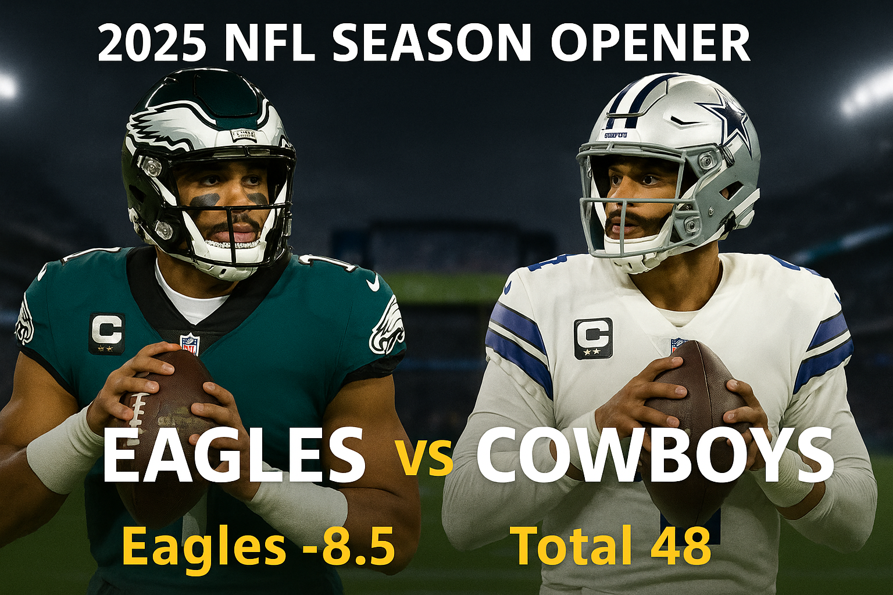

Monday Night Football: Panthers at 49ers - Week 12 Finale
Posted: November 24, 2025, 10:30 AM ET
Carolina Panthers (6-5) at San Francisco 49ers (7-4) | Monday 8:15 PM ET | ESPN/ABC
Levis Stadium, Santa Clara, CA | SF -7.5 | Total 49.5
The Week 12 slate concludes with a fascinating Monday Night Football matchup at Levis Stadium, where the San Francisco 49ers host the Carolina Panthers. This game carries significant playoff implications for both teams in whats shaping up to be an unexpectedly tight NFC race.
The Carolina Panthers are one of the seasons most pleasant surprises, sitting at 6-5 and firmly in the NFC South race. Bryce Young is coming off the best game of his career, throwing for 448 yards and three touchdowns in an overtime victory over the Atlanta Falcons. Through 10 games, Young has accumulated 1,962 passing yards with 14 touchdowns against 7 interceptions. The former No. 1 overall pick has gone 7-2 against the spread over his last nine starts, demonstrating both his growth and the teams ability to stay competitive. Carolina has covered in five of six games against NFC opponents in 2025, and they bring a 5-1 ATS record as underdogs into tonights matchup.
The 49ers are looking to capitalize on Brock Purdys return to form. After missing time earlier in the season, Purdy came back with a bang last week, completing 19 of 26 passes for 200 yards and three touchdowns in a commanding 41-22 victory over Arizona. The offense runs through Christian McCaffrey, who leads the NFL in scrimmage yards with 1,439 and is on pace for a historic 1,000-yard rushing and 1,000-yard receiving season. McCaffrey faces his former team for the first time since being traded to San Francisco in 2022, adding a compelling storyline to this matchup.
San Franciscos weapons are fully loaded tonight. George Kittle remains an elite tight end and was voted No. 31 in the NFLs Top 100 Players list for 2025, while Ricky Pearsall adds another dimension to the passing attack. The concern for the 49ers is their defense, which ranks 28th in quarterback rating allowed and dead last in sacks. Without key pieces like Fred Warner, Nick Bosa, and first-round pick Mykel Williams for the rest of the season, the Niners offense knows it must outscore opponents.
The betting trends paint an interesting picture. Carolina is 9-2 ATS historically when playing in San Francisco, and the Panthers are 5-1 ATS as underdogs this season. San Francisco is 0-5 ATS in games off more than six days rest since 2024, which applies to this Monday night spot. Despite the 7.5-point spread, this game profiles closer than expected. San Francisco should win this game behind McCaffrey and their offensive firepower, but Carolina keeps it competitive throughout.
NFL Week 12 Complete Breakdown: Sunday Through Monday Night - Thirteen Games, Playoff Implications Everywhere
Posted: November 23, 2025, 6:00 AM ET
Week 12 delivers thirteen compelling matchups across Sunday and Monday, with massive playoff implications rippling through both conferences. We've got dominant teams looking to extend winning streaks, struggling franchises fighting for relevance, and several division showdowns that will shape the postseason picture. From the Patriots' historic rookie campaign to the Titans' historically bad offense, from NFC East fireworks to basement battles, this week has it all. Let's break down every single game with verified stats, trends, and the key angles you need to know.
 Pittsburgh Steelers at Chicago Bears
Pittsburgh Steelers at Chicago Bears  (Sunday, 1:00 PM ET)
(Sunday, 1:00 PM ET)
Records: Pittsburgh 6-4 (2nd AFC North) | Chicago 7-3 (1st NFC North) | Line: CHI -2.5 | Head-to-Head: Bears lead all-time 19-8, Steelers are 1-12 playing in Chicago
This matchup features two teams heading in opposite directions from what many expected pre-season. The Bears have emerged as one of 2025's biggest surprises, sitting atop the NFC North at 7-3 behind the development of quarterback Caleb Williams in his second season. Williams has thrown for 2,329 yards with 13 touchdowns against just 4 interceptions, showing the kind of ball security and decision-making that has Chicago fans dreaming about January football. The Bears rank 8th in scoring at 25.8 points per game, with a balanced attack that features 1,466 rushing yards and 2,378 passing yards.
The Steelers arrive at 6-4 with the 12th-ranked offense (24.6 PPG) and 18th-ranked defense (23.4 PPG allowed). Pittsburgh has accumulated 2,869 total yards with a relatively balanced split between rushing (882) and passing (2,108). The defense has recorded 19 sacks through ten games but has surrendered 23 touchdowns. The bigger concern for Pittsburgh is the venue: historically, the Steelers are 1-12 all-time when playing in Chicago, and the Bears have outscored them 50-46 in their last two meetings. That home-field dominance at Soldier Field is real, and with approximately 10mph winds expected to have minimal impact, the weather won't be an equalizer.
Chicago's defensive weakness ranks 26th in points allowed at 26.4 per game, which theoretically gives Pittsburgh's balanced offense an opportunity. However, the Bears have generated 15 interceptions this season, showing a knack for creating game-changing turnovers. The Steelers have thrown 7 picks, and if Chicago's defense can force a couple of turnovers while Williams takes care of the football, the home team should control this NFC-AFC crossover. The 2.5-point spread feels tight, but given the historical dominance the Bears have enjoyed in this venue against Pittsburgh and their superior record, Chicago should cover and win outright.
 New England Patriots at Cincinnati Bengals
New England Patriots at Cincinnati Bengals  (Sunday, 1:00 PM ET)
(Sunday, 1:00 PM ET)
Records: New England 9-2 (1st AFC East, tied for best record in NFL) | Cincinnati 3-7 (3rd AFC North) | Line: NE -7 | Injury: Joe Burrow (CIN) OUT - turf toe, Joe Flacco starting
This game epitomizes the phrase "mismatch on paper." The Patriots enter with the NFL's best record at 9-2, riding an eight-game winning streak that has them positioned as legitimate Super Bowl contenders. Rookie quarterback Drake Maye is rewriting the record books, leading the league in passing yards with 2,836 and adding 20 touchdowns against just 5 interceptions. What Maye has accomplished is historic - no quarterback in NFL history has matched his statistical achievements through their first 11 starts. New England ranks 7th in scoring at 26.5 points per game with 3,927 total yards and an impressive 36 sacks on defense (tied for 4th in the NFL). They're dominant on both sides of the ball and showing no signs of slowing down.
Cincinnati's season, meanwhile, is effectively over at 3-7. The Bengals rank dead last in the NFL in points allowed at a catastrophic 33.4 per game - they've surrendered 334 points through ten games, which is historically bad. Joe Burrow remains sidelined with turf toe and won't be activated for Week 12, meaning 39-year-old Joe Flacco will make his sixth consecutive start. Flacco has thrown for 2,268 yards with 14 touchdowns and 9 interceptions, and while he's a capable veteran, he's simply not in the same stratosphere as a healthy Burrow. The offense ranks 18th in scoring at 22.8 PPG with just 228 total points.
Let's do the math here: a 9-2 team with the 7th-best offense (26.5 PPG) and a defense recording 36 sacks, traveling to face a 3-7 team with the 32nd-ranked defense (33.4 PPG allowed) and a backup quarterback. This is the definition of a smash spot for New England. The Patriots should score 30+ points with ease, and Maye's historic rookie campaign will continue with another dominant performance. Cincinnati's defense simply has no answers for what the Patriots will throw at them. Look for New England to cover the 7-point spread comfortably and potentially win by double digits.
 New York Giants at Detroit Lions
New York Giants at Detroit Lions  (Sunday, 1:00 PM ET)
(Sunday, 1:00 PM ET)
Records: NY Giants 2-9 (4th NFC East) | Detroit 6-4 (3rd NFC North) | Line: DET -10 | Injury: Jaxson Dart (NYG) OUT - concussion, Sam LaPorta (DET) OUT for season - back surgery
The Giants are one of the NFL's worst teams, and their 2-9 record tells the story. New York ranks 24th in scoring at 21.7 points per game with 3,665 total yards. Daniel Jones has thrown for 2,659 yards with 15 touchdowns and 7 interceptions, but the offense has managed just 29 total touchdowns. The defense is even worse, allowing 5.98 yards per play and giving up 148.6 rushing yards per game recently. They've surrendered 35 touchdowns through eleven weeks. Backup quarterback Jaxson Dart is ruled out with a concussion, leaving the Giants even more shorthanded. This is a team playing out the string.
Detroit, conversely, is in the thick of the NFC North race at 6-4. The Lions rank 4th in scoring at 29.2 points per game - entering Week 11 they were averaging 31.4 PPG, second only to the Colts. Jared Goff has been exceptional, completing passes at a 75.2% clip with 2,490 yards, 21 touchdowns (tied for 2nd in the NFL), and just 4 interceptions. The Lions have weapons everywhere: running back Jahmyr Gibbs has 390 yards and 4 touchdowns, while Amon-Ra St. Brown has hauled in 44 catches for 452 yards and 6 touchdowns. The defense ranks 10th in points allowed at 21.6 per game under coordinator Kelvin Sheppard.
The only loss for Detroit is tight end Sam LaPorta, who's out for the season following back surgery. But that won't matter against a Giants defense allowing nearly 6 yards per play. Ford Field will be rocking, and the Lions need to take care of business against inferior opponents if they want to secure a playoff spot. Detroit's explosive offense should have no trouble shredding New York's porous defense, and the Giants' anemic offense won't be able to keep pace. This double-digit spread is justified. The Lions should dominate from start to finish and potentially blow this game wide open. Detroit by two touchdowns feels right.
 Minnesota Vikings at Green Bay Packers
Minnesota Vikings at Green Bay Packers  (Sunday, 1:00 PM ET)
(Sunday, 1:00 PM ET)
Records: Minnesota 4-6 (4th NFC North) | Green Bay 6-3-1 (2nd NFC North) | Line: GB -6 | Division Game: NFC North showdown at Lambeau Field
The NFC North is absolutely loaded this season, and this division matchup has serious implications for playoff positioning. Minnesota sits at 4-6, last in the division but still mathematically alive. The Vikings rank 21st in scoring at 22.3 points per game with 322.3 total yards per game (23rd in the NFL). Sam Darnold has thrown for 2,541 yards with 17 touchdowns but has also tossed 10 interceptions. The bigger problem is the turnover differential: Minnesota is -7, which is a death sentence in close games. The defense does generate pressure with 34 sacks (tied for 6th in the NFL), but they're not creating enough impact plays to overcome offensive mistakes.
Green Bay sits in second place at 6-3-1 after ending a two-game losing streak with a win over the Giants in Week 11. The Packers rank 13th in scoring at 24.0 points per game with a balanced attack featuring 1,007 rushing yards and 2,247 passing yards. Jordan Love has been excellent protecting the football, throwing for 2,421 yards with 15 touchdowns and only 3 interceptions. That ball security is a massive advantage over Darnold's 10 picks. The Packers' defense has been stout, allowing just 2,585 total yards and only 18 touchdowns (5 rushing, 13 passing). They're well-coached and disciplined.
This game will come down to which quarterback takes care of the football. Love's 3 interceptions versus Darnold's 10 is a glaring disparity, and Minnesota's -7 turnover ratio suggests they'll likely cough up the ball at least once at Lambeau. The Packers' defense (2,585 yards allowed) should be able to limit a Vikings offense that ranks 21st in scoring. Meanwhile, Green Bay's balanced attack and Love's efficiency should be enough to move the ball on Minnesota. Late November at Lambeau Field with playoff implications? The home team has every advantage. Green Bay covers the 6-point spread and keeps their NFC North title hopes alive.
 Seattle Seahawks at Tennessee Titans
Seattle Seahawks at Tennessee Titans  (Sunday, 1:00 PM ET)
(Sunday, 1:00 PM ET)
Records: Seattle 7-3 (2nd NFC West) | Tennessee 1-9 (4th AFC South, worst record in NFL) | Line: SEA -13.5 | Point Differential: Titans -130 (worst in NFL)
If you're looking for the most lopsided matchup of Week 12, this is it. Seattle enters at 7-3 with the 3rd-ranked scoring offense in the NFL at 30.6 points per game. The Seahawks have accumulated 3,658 total yards with a balanced 1,164 rushing and 2,556 passing. They're one of only a handful of teams in the top 5 in BOTH offensive yards per play AND defensive yards per play allowed. The defense has surrendered just 3,015 total yards - that's elite territory. This is a complete, well-rounded football team that's competing for the NFC West title.
Tennessee, meanwhile, is an absolute disaster. The Titans are 1-9 with a -130 point differential - the worst in the entire NFL. They rank dead last in scoring at 14.3 points per game, dead last in total yards at 274.3 per game, 30th in passing (195.4 YPG), and dead last in rushing (78.9 YPG). They've managed just 2,425 total yards and only 12 touchdowns all season. Think about that - 12 touchdowns through ten games. That's barely over one per game. The offense is historically inept. The defense actually leads the NFL in sacks with 41, but what good does that do when your offense can't score?
This game has "ugly blowout" written all over it. Seattle is scoring 30.6 points per game, Tennessee is scoring 14.3. The Seahawks are chasing the Rams in the NFC West and need to keep winning. They're not going to take their foot off the gas against one of the league's worst teams. The 13.5-point spread is massive, but it's justified. In fact, it might not be enough. Seattle could win this game by 20+ if they wanted to run up the score. The Seahawks should dominate every phase of the game, and Tennessee's historically bad offense will struggle to move the ball against Seattle's top-5 defense. Expect a wire-to-wire beatdown in Nashville.
 Indianapolis Colts at Kansas City Chiefs
Indianapolis Colts at Kansas City Chiefs  (Sunday, 1:00 PM ET)
(Sunday, 1:00 PM ET)
Records: Indianapolis 8-2 (1st AFC South, best point differential in NFL at +115) | Kansas City 5-5 (3rd AFC West) | Line: KC -3.5 | Weather: Perfect conditions - temps in 50s, no precipitation, winds under 10mph
This is the game of the week, no question. Indianapolis enters as the NFL's hottest team at 8-2 with a point differential of +115 - the best in the entire league. The Colts lead the NFL in scoring at 32.1 points per game and total yards at 396.9 per game. They've put up 321 points in ten games while allowing just 206 (20.6 PPG, ranked 9th). This is an elite team on both sides of the ball, and they're being described as "red-hot" heading into Arrowhead Stadium. The offense is explosive, balanced, and efficient. The defense is stingy and opportunistic. Indianapolis is a legitimate Super Bowl contender.
Kansas City, meanwhile, is in unfamiliar territory at 5-5. The defending champions sit in third place in the AFC West behind the Broncos (9-2) and Chargers (7-4). Patrick Mahomes has thrown for 2,625 yards with 18 touchdowns and 6 interceptions, while Travis Kelce is on pace for a 1,000-yard season (50 catches, 631 yards, 4 TDs) and recently became the Chiefs' all-time touchdown leader with 84 career scores. The Chiefs rank 9th in scoring at 25.4 PPG but their defense is elite at 4th in the NFL (18.1 PPG allowed, just 181 total points surrendered). They're still a dangerous team, but the .500 record shows they've been vulnerable.
This matchup features the league's best offense (Colts: 32.1 PPG) against the 4th-best defense (Chiefs: 18.1 PPG allowed). Something's got to give. The Chiefs are 3.5-point favorites at home, which shows the respect the oddsmakers have for Mahomes and Andy Reid at Arrowhead, even with a 5-5 record. But Indianapolis is rolling right now, and their point differential suggests they're the better team. The weather will be perfect with temps in the 50s and minimal wind. This is a potential playoff preview and could be a high-scoring affair - the Colts' explosive offense versus the Chiefs' need to win now before their season slips away. This should be an absolute shootout between two teams desperate for a victory. Don't be surprised if this game hits the 50s in total points.
 New York Jets at Baltimore Ravens
New York Jets at Baltimore Ravens  (Sunday, 1:00 PM ET)
(Sunday, 1:00 PM ET)
Records: NY Jets 2-8 (4th AFC East) | Baltimore 5-5 (2nd AFC North) | Line: BAL -14 | Injury: Aaron Rodgers (NYJ) questionable - left wrist, Lamar Jackson (BAL) cleared to play
The Jets' season is over. At 2-8, they're one of the league's worst teams, ranking 25th in scoring (20.9 PPG, just 209 total points) and 27th in points allowed (26.8 PPG, 268 total points surrendered). Aaron Rodgers is questionable with a left wrist injury, and even if he plays, this roster is dysfunctional. The Patriots dominated them 27-14 in Week 11. The only bright spot is their pass rush - the Jets recorded 8 sacks on Josh Allen in a Thursday night game and rank tied for 4th in the NFL with 36 sacks overall. But generating pressure hasn't translated to wins.
Baltimore sits at 5-5 and desperately needs to win games like this to stay in the AFC playoff hunt. Lamar Jackson has been cleared to play after a minor ankle issue, and he's been outstanding through seven games: 1,442 yards, 15 touchdowns, just 3 interceptions, and a 115.5 passer rating. Jackson is a dual-threat nightmare who ranks in the top 2 in quarterback rushing yards in all seven of his NFL seasons. The Ravens rank 10th in scoring at 25.2 PPG with a balanced 1,420 rushing yards and 1,999 passing yards. But the real story is the defense: from Weeks 6-11, Baltimore's D allowed just 14.8 points per game, 299.4 yards per game, and held opponents to a 27% third-down conversion rate. That's elite territory.
The 14-point spread reflects the gulf in talent and motivation between these teams. The Ravens' surging defense should shut down the Jets' middling offense, and Lamar's dual-threat ability will carve up a New York defense that ranks 27th in points allowed. Baltimore needs a statement win to build momentum, and the Jets have no answers. M&T Bank Stadium will be rocking on a sunny Baltimore Sunday, and the Ravens should dominate from the opening kickoff. This could get ugly fast. Baltimore covers the two-touchdown spread and sends the Jets packing with their ninth loss.
 Cleveland Browns at Las Vegas Raiders
Cleveland Browns at Las Vegas Raiders  (Sunday, 4:05 PM ET)
(Sunday, 4:05 PM ET)
Records: Cleveland 2-8 (4th AFC North) | Las Vegas 2-8 (4th AFC West) | Storyline: Battle of NFL's basement dwellers | QB: Shedeur Sanders starting for CLE (Dillon Gabriel in concussion protocol), Geno Smith starting for LV
This is a game that matters more for 2026 draft positioning than playoff hopes. The Browns are 2-8 with the 29th-ranked scoring offense (16.2 PPG, just 162 total points). Cleveland's defense ranks 18th (23.4 PPG allowed, 234 points surrendered) and has shown "shockingly dominant" stretches at times, but the offense is so anemic it doesn't matter. Quarterback Shedeur Sanders will start with Dillon Gabriel in concussion protocol. The Browns' season ended weeks ago.
Las Vegas is equally bad at 2-8. The Raiders rank 31st in scoring at 15.5 points per game and 30th in total yards at 290.4 per game. They've managed just 16 total touchdowns (4 rushing, 12 passing) with a -4 turnover ratio. The offense has generated only 164 first downs compared to 195 allowed by the defense. Quarterback Geno Smith was acquired from the Seahawks in the offseason and reunited with former Seahawks head coach Pete Carroll, who now leads the Raiders. But the reunion hasn't produced results - this offense is near the bottom of the league in every category.
What do you get when the 29th-ranked offense plays the 31st-ranked offense? An ugly, low-scoring slog through the desert. Cleveland scores 16.2 points per game, Las Vegas scores 15.5 - that's a combined 31.7 PPG between two teams. The total on this game should be in the low 40s, and it might not even hit that number. Both defenses are middling (18th and middle-of-the-pack respectively), but when neither offense can move the ball, points are hard to come by. Expect a game filled with punts, three-and-outs, and field goal attempts. This is the kind of game that makes you appreciate elite offenses. For fans of defensive football and ugly slugfests, enjoy. For everyone else, there are eleven other games to watch this week.
 Jacksonville Jaguars at Arizona Cardinals
Jacksonville Jaguars at Arizona Cardinals  (Sunday, 4:05 PM ET)
(Sunday, 4:05 PM ET)
Records: Jacksonville 6-4 (2nd AFC South) | Arizona 3-7 (4th NFC West) | Line: JAX -2.5 (road favorites) | Injuries: Brian Thomas Jr. (JAX) OUT - ankle, Marvin Harrison Jr. (ARI) OUT - appendicitis
The Jaguars are in the thick of the AFC South race at 6-4 under first-year head coach Liam Coen. Jacksonville ranks 13th in scoring at 24.0 points per game with a balanced attack: 1,275 rushing yards and 2,151 passing yards. Trevor Lawrence has thrown for 2,151 yards with 11 touchdowns and 8 interceptions. The defense ranks 12th in points allowed at 22.6 per game (226 total points) with 26 sacks. This is a solid, well-coached team that's trying to chase down the Colts (8-2) in the division. However, they're without top wide receiver Brian Thomas Jr. due to an ankle injury, which is a significant blow to the passing game.
Arizona is struggling at 3-7, last in a competitive NFC West. The Cardinals rank 20th in scoring at 22.4 PPG with 25 total touchdowns. The defense ranks 19th in points allowed (23.9 PPG) but does create some turnovers - they rank 6th in the NFL with 13 takeaways. However, they've surrendered 27 touchdowns including 3 defensive scores, and they only average 2.0 sacks per game (ranked 24th). In Week 9, they allowed the Cowboys to score on 5 of their first 6 possessions. The Cardinals are also missing their star rookie receiver Marvin Harrison Jr., who's out with appendicitis.
Both teams are dealing with key offensive injuries, which should make this a lower-scoring, grind-it-out affair. The Jaguars are 2.5-point road favorites, which shows respect for their overall roster quality and playoff positioning. Jacksonville's defense (12th in points allowed) should be able to contain an Arizona offense that's missing its top weapon. The Cardinals' 6th-ranked turnover creation is the X-factor - if they can force Lawrence into a couple of mistakes, they have a shot. But the Jaguars need this game to keep pace in the AFC South, and their balanced attack should be enough to win on the road. Jacksonville escapes with a close victory, though the spread might be a sweat.
 Philadelphia Eagles at Dallas Cowboys
Philadelphia Eagles at Dallas Cowboys  (Sunday, 4:25 PM ET)
(Sunday, 4:25 PM ET)
Records: Philadelphia 8-2 (1st NFC East, 1st in NFC Conference) | Dallas 4-5-1 (2nd NFC East) | Line: PHI -4.5 (road favorites) | Week 1: Eagles defeated Cowboys 24-20 in chippy, weather-delayed game
Get ready for fireworks. The Eagles-Cowboys rivalry is one of the nastiest in the NFL, and this NFC East showdown has massive division implications. Philadelphia enters at 8-2, leading not just the division but the entire NFC Conference. The Eagles rank 16th in scoring at 23.4 PPG, which seems modest, but they're efficient and disciplined. Jalen Hurts has thrown for 1,995 yards with 16 touchdowns and only 1 interception - that touchdown-to-interception ratio is absurd. The Eagles rushed for two TDs in their Week 1 victory over Dallas. The defense ranks 8th in points allowed (20.1 PPG, just 201 total points) and just shut down Jared Goff and the Lions 16-9 in Week 11 on Sunday Night Football. This is a complete team firing on all cylinders.
Dallas presents a fascinating paradox. The Cowboys rank 2nd in the NFL in scoring at 29.6 points per game with 296 total points. Dak Prescott has thrown for 2,587 yards with 21 touchdowns and 6 interceptions. The offense is explosive with 34 total touchdowns. But here's the problem: they rank 31st in points allowed at 29.3 per game (293 total points surrendered). They're essentially a .500 team (4-5-1) because their elite offense is completely canceled out by their catastrophic defense. The point differential tells the story: +3. They score 29.6, allow 29.3. That's not sustainable.
When these teams met in Week 1, it was a chippy affair. The Eagles won 24-20 in a weather-delayed game that was described as "full of skirmishes." Jalen Carter was ejected early for spitting on Dak Prescott. This is one of the NFL's nastiest division rivalries, and the rematch at AT&T Stadium should be equally heated. The matchup favors Philadelphia: the Eagles' 8th-ranked defense (20.1 PPG allowed) versus Dallas's 31st-ranked defense (29.3 PPG allowed) is a massive disparity. Jalen Hurts' ball security (1 INT) versus the Cowboys' porous defense should allow Philadelphia to control this game. Dallas can score, but can they stop the Eagles? History suggests no. Philadelphia wins and covers the 4.5-point spread on the road.
 Atlanta Falcons at New Orleans Saints
Atlanta Falcons at New Orleans Saints  (Sunday, 4:25 PM ET)
(Sunday, 4:25 PM ET)
Records: Atlanta 3-7 (3rd NFC South) | New Orleans 2-8 (4th NFC South) | Line: ATL -2.5 (road favorites) | Injury: Michael Penix Jr. (ATL) season-ending ACL surgery, Kirk Cousins starting
This NFC South basement battle features two teams whose seasons are effectively over. Atlanta is 3-7 despite having the NFL's best total defense, allowing just 244 yards per game (ranked 1st) and 135 passing yards per game (also 1st). The Falcons rank 6th in rushing (136.5 YPG) and 13th in passing yards. So why are they 3-7? Because they can't score. Atlanta ranks 26th in the NFL at 19.0 points per game. Their elite defense and strong running game aren't enough when the offense can't find the end zone. Michael Penix Jr. is undergoing season-ending ACL surgery, so Kirk Cousins takes over at quarterback for the final six games.
New Orleans is even worse at 2-8 under head coach Kellen Moore. The Saints rank 30th in scoring at 15.5 points per game with just 155 total points through ten games. They've managed only 2,972 total yards (928 rushing, 2,191 passing). The defense ranks 21st in points allowed (25.0 PPG, 250 total points) and allowed 21.5 PPG and 313.2 yards per game over a six-game stretch earlier this season. This is a team with no identity and no direction. The offense is putrid, the defense is mediocre, and they're playing for draft position.
When the NFL's best defense (Falcons: 244 YPG allowed) faces the 30th-ranked offense (Saints: 15.5 PPG), the result should be predictable. Atlanta's defensive dominance will suffocate New Orleans' anemic attack. The question is whether the Falcons' offense can score enough to win comfortably. Kirk Cousins is a capable veteran who should be able to move the ball against the Saints' 21st-ranked defense. This will be a low-scoring, ugly affair - both teams struggle to score, but Atlanta's elite defense gives them a significant advantage. The Falcons should grind out a victory on the road, though the 2.5-point spread reflects how bad both teams are. Expect something like 20-13 Falcons.
 Tampa Bay Buccaneers at Los Angeles Rams
Tampa Bay Buccaneers at Los Angeles Rams  (Sunday, 8:20 PM ET - SUNDAY NIGHT FOOTBALL)
(Sunday, 8:20 PM ET - SUNDAY NIGHT FOOTBALL)
Records: Tampa Bay 6-4 (1st NFC South) | LA Rams 8-2 (1st NFC West, tied for 3rd-best record in NFL) | Line: LAR -6.5 | Storyline: Baker Mayfield returns to face former team, first QB matchup between #1 overall picks Stafford (2009) and Mayfield (2018)
Sunday Night Football delivers a clash of first-place teams with contrasting momentum. Tampa Bay is 6-4 and leads the NFC South, but they're on a two-game losing streak that's tightened the division race - the Panthers are just one game back at 5-5. The Buccaneers rank 10th in scoring at 25.2 PPG (252 total points) with 346.5 yards per game. Baker Mayfield has thrown for 2,365 yards with 17 touchdowns and 3 interceptions. The defense ranks 21st in points allowed at 25.0 PPG (250 total points). Tampa Bay has the offense to compete, but their recent struggles and defensive issues are concerning.
The Rams are rolling at 8-2, riding a five-game winning streak. Los Angeles ranks 6th in scoring at 27.2 PPG with a balanced 1,140 rushing yards and 2,557 passing yards. Matthew Stafford has been absolutely elite, throwing for 2,557 yards with an NFL-leading 27 touchdowns against just 2 interceptions. That 27:2 touchdown-to-interception ratio is historic - he's on pace to become the first quarterback since Tom Brady in 2021 to throw 30 touchdowns in his team's first 11 games. The Rams' defense has been outstanding recently, allowing only 172 points (the fewest in the NFL over recent stretches) and just 16 total touchdowns. This is a complete team on both sides of the ball.
The storylines are compelling. Mayfield played for the Rams in 2022, filling in for an injured Stafford, and he's called Stafford the "best, purest passer" in league history. This is the first-ever matchup between two former #1 overall picks - Stafford in 2009, Mayfield in 2018. The Rams have won two games over top division rivals during their five-game winning streak, while the Bucs have lost two straight. The home team at SoFi Stadium has every advantage: better record, momentum, home field, and quarterback play. Stafford's 27 touchdowns versus Mayfield's 17 tells you everything you need to know. The Rams should control this game from start to finish. Los Angeles covers the 6.5-point spread and makes a statement in primetime.
 Carolina Panthers at San Francisco 49ers
Carolina Panthers at San Francisco 49ers  (Monday, 8:15 PM ET - MONDAY NIGHT FOOTBALL)
(Monday, 8:15 PM ET - MONDAY NIGHT FOOTBALL)
Records: Carolina 5-5 (2nd NFC South) | San Francisco 7-4 (3rd NFC West) | Line: SF -6.5 | Playoff Implications: Both teams fighting for Wild Card spots
Monday Night Football closes out Week 12 with a game that has significant Wild Card implications for both teams. Carolina is 5-5 and sits in second place in the NFC South, just one game behind the Buccaneers (6-4). The Panthers rank 28th in scoring at 18.8 points per game with just 207 total points through 11 games. That's an anemic offense that's managed only 23 touchdowns. However, their defense ranks 13th in points allowed at 22.6 PPG (249 total points), and that defensive competence has kept them in games. The Panthers are scrappy and find ways to win close games - they forced overtime against the Falcons in Week 11 and won on a field goal. This is a team that competes hard even when the offense struggles.
San Francisco is 7-4 and third in the hyper-competitive NFC West behind the Rams (8-2) and the Seahawks (7-3). The 49ers rank 15th in scoring at 23.7 PPG with a balanced 1,043 rushing yards and 2,937 passing yards. They've scored 28 touchdowns. The defense has been inconsistent, allowing 3,882 total yards and 30 touchdowns (8 rushing, 21 passing, 1 return). They've recorded 19 sacks but need to create more consistent pressure. In Week 11, the 49ers easily handled the Cardinals despite quarterback Jacoby Brissett setting an NFL record with 47 completions. San Francisco needs wins to stay in the NFC West race and potentially catch the Seahawks and Rams.
The Panthers' offense is the worst of any team with a winning record. Scoring 18.8 points per game simply isn't sustainable in today's NFL, but their 13th-ranked defense keeps games close. The 49ers' more balanced attack (23.7 PPG offense) should be able to exploit Carolina's offensive limitations by controlling time of possession and field position. At Levi's Stadium on Monday night with the home crowd behind them, San Francisco has every advantage. The 6.5-point spread feels reasonable - the 49ers are the better team, but the Panthers are scrappy and won't go down easy. San Francisco should win, but Carolina's defensive competence will keep it within a touchdown. 49ers 24, Panthers 17.
WEEK 12 SUMMARY: This Sunday and Monday slate features everything from historic rookie performances (Drake Maye), to elite quarterback matchups (Stafford vs. Mayfield, Mahomes vs. the Colts), to NFC East hatred (Eagles-Cowboys), to basement battles that make you appreciate good football. The Patriots and Colts look like the class of the AFC, while the NFC is wide open with the Eagles, Rams, and Bears all making strong cases. Injuries continue to shape the season - Burrow, Penix Jr., and several key skill players are sidelined. The playoff picture is crystalizing, and Week 12 will go a long way toward determining who's in and who's out. Buckle up for thirteen games of football over four days.
NFL Week 11 Complete Breakdown: Sunday Through Monday Night Action
Posted: November 16, 2025
Week 11 brings fourteen matchups from Sunday morning's early kickoff through Monday Night Football. The slate features division rivalries, playoff positioning battles, and several games drawing massive consensus action. Let's break down every matchup with the verified betting data and key trends.
 Washington at Miami
Washington at Miami  (Sunday, 9:30 AM ET)
(Sunday, 9:30 AM ET)
Line: WAS +2.5 / MIA -2.5 | Total: 47.0 | Public: 29% WAS / 71% MIA | Consensus Picks: 18
Two 3-7 teams meet in the early window with Miami drawing a massive 18 consensus picks - the most on the entire slate. Washington is 1-4 on the road with a 1-4 road ATS mark, while Miami sits at 2-3 at home with a 3-2 home ATS record. Both teams are 3-7 ATS overall and 3-7 in their last 10 games. The heavy public backing (71%) and consensus support for Miami as just 2.5-point favorites suggests sharp money sees value in the home team.
Green Bay at N.Y. Giants (Sunday, 1:00 PM ET)
Line: GB -7.5 / NYG +7.5 | Total: 42.5 | Public: 58% GB / 42% NYG | Consensus Picks: 11
Green Bay is 5-3 overall with a 2-1 road record, while the Giants are struggling at 2-8 with a 2-2 home mark. The Packers are 3-6 ATS overall including 1-3 on the road, which is worth noting when laying a touchdown. New York is 5-5 ATS overall and 2-2 at home ATS. Both teams are 5-3 and 2-8 in their last 10 respectively. The total of 42.5 is the lowest on the slate.
Chicago at Minnesota (Sunday, 1:00 PM ET)
Line: CHI +3 / MIN -3 | Total: 48.0 | Public: 38% CHI / 62% MIN | Consensus Picks: 15
NFC North division battle featuring Chicago at 6-3 overall with a 3-2 road record against Minnesota at 4-5 with a 1-3 home mark. The Bears are 5-4 ATS overall including 3-2 on the road, while Minnesota is 4-5 ATS overall but just 1-3 at home ATS. Chicago is 6-3 in their last 10 while Minnesota is 4-5. The Bears getting 3 points with their superior form is noteworthy.
 Houston at Tennessee (Sunday, 1:00 PM ET)
Houston at Tennessee (Sunday, 1:00 PM ET)
Line: HOU -6 / TEN +6 | Total: 37.0 | Public: 65% HOU / 35% TEN | Consensus Picks: 12
Houston (4-5) travels to face Tennessee (1-8) in an AFC South clash. The Texans are 4-5 ATS overall including 1-3 on the road. Tennessee is winless at home at 0-4 this season with a 3-6 ATS overall mark and 1-3 home ATS. Both teams are 4-5 and 1-8 respectively in their last 10. The total of 37.0 is the lowest on the slate.
Tampa Bay at Buffalo  (Sunday, 1:00 PM ET)
(Sunday, 1:00 PM ET)
Line: TB +5.5 / BUF -5.5 | Total: 47.0 | Public: 46% TB / 54% BUF | Consensus Picks: 15
Tampa Bay enters at 6-3 overall with an impressive 4-1 road record, while Buffalo is 6-3 with a 4-1 home mark. The Bucs are 5-4 ATS overall with a stellar 4-1 road ATS record. Buffalo is 4-5 ATS overall but just 2-3 at home ATS. Both teams are 6-3 in their last 10. Tampa getting 5.5 points with their elite road ATS metrics looks interesting.
Carolina at Atlanta (Sunday, 1:00 PM ET)
Line: CAR +3.5 / ATL -3.5 | Total: 42.5 | Public: 42% CAR / 58% ATL | Consensus Picks: 17
This NFC South rivalry has drawn 17 consensus picks - second-most on the slate. Carolina is 5-5 overall with a 2-3 road record, while Atlanta sits at 3-6 with a 2-2 home mark. The Panthers are 6-4 ATS overall including 3-2 on the road. Atlanta is 4-4-1 ATS overall and 2-2 at home. Carolina is 5-5 in their last 10 while Atlanta is 3-6. The total of 42.5 ties for the lowest.
 L.A. Chargers at Jacksonville (Sunday, 1:00 PM ET)
L.A. Chargers at Jacksonville (Sunday, 1:00 PM ET)
Line: LAC -3 / JAC +3 | Total: 43.5 | Public: 70% LAC / 30% JAC | Consensus Picks: 11
The Chargers bring a 7-3 record and 3-1 road mark to Jacksonville (5-4, 3-2 home). LA is 4-5-1 ATS overall but just 1-3 on the road ATS. Jacksonville is 4-4-1 ATS overall including 3-2 at home ATS. Both teams are 7-3 and 5-4 in their last 10. The Chargers' poor road ATS record (1-3) is concerning when laying points.
Cincinnati at Pittsburgh (Sunday, 1:00 PM ET)
Line: CIN +5.5 / PIT -5.5 | Total: 49.0 | Public: 47% CIN / 53% PIT | Consensus Picks: 13
AFC North clash with Cincinnati at 3-6 overall and 1-3 on the road against Pittsburgh at 5-4 with a 3-2 home mark. The Bengals are 3-6 ATS overall including 1-3 on the road. Pittsburgh is 4-5 ATS overall including 3-2 at home. Both teams are 3-6 and 5-4 respectively in their last 10. The total of 49.0 is the highest on the slate.
Seattle at L.A. Rams (Sunday, 4:05 PM ET)
Line: SEA +3 / LA -3 | Total: 48.5 | Public: 38% SEA / 62% LA | Consensus Picks: 14
Massive NFC West showdown between two 7-2 teams. Seattle is perfect 4-0 on the road with a 7-2 ATS overall record including 4-0 road ATS. The Rams are 7-2 overall with a 3-1 home record and 7-2 ATS overall including 3-1 at home. Both teams are 7-2 in their last 10. Seattle's perfect road ATS record is remarkable.
San Francisco at Arizona (Sunday, 4:05 PM ET)
Line: SF -3 / ARI +3 | Total: 48.5 | Public: 69% SF / 31% ARI | Consensus Picks: 13
San Francisco (6-4, 4-2 road) travels to Arizona (3-6, 1-3 home). The 49ers are 5-5 ATS overall including 4-2 on the road ATS. Arizona is 5-4 ATS overall but just 1-3 at home ATS. San Francisco is 6-4 in their last 10 while Arizona is 3-6. The 49ers' strong road ATS record stands out.
Baltimore at Cleveland (Sunday, 4:25 PM ET)
Line: BAL -8.5 / CLE +8.5 | Total: 39.0 | Public: 63% BAL / 37% CLE | Consensus Picks: 12
Baltimore (4-5, 2-2 road) visits Cleveland (2-7, 2-2 home) in an AFC North matchup. The Ravens are 4-5 ATS overall including 2-2 on the road. Cleveland is 3-6 ATS overall but 3-1 at home ATS - showing they compete well at home despite their record. Both teams are 4-5 and 2-7 respectively in their last 10. The total of 39.0 is among the lowest.
Kansas City at Denver  (Sunday, 4:25 PM ET)
(Sunday, 4:25 PM ET)
Line: KC -4 / DEN +4 | Total: 45.0 | Public: 50% KC / 50% DEN | Consensus Picks: 16
Massive AFC West battle with a perfect 50-50 public split. Kansas City is 5-4 overall with a 1-3 road record, while Denver is 8-2 with a perfect 5-0 home record. The Chiefs are 5-4 ATS overall including just 1-3 on the road ATS. Denver is 4-5-1 ATS overall and 2-3 at home ATS. Both teams are 5-4 and 8-2 in their last 10. Denver's undefeated home record getting 4 points is notable.
Detroit at Philadelphia (Sunday, 8:20 PM ET)
Line: DET +2.5 / PHI -2.5 | Total: 46.5 | Public: 50% DET / 50% PHI | Consensus Picks: 13
Sunday Night Football features another 50-50 public split. Detroit is 6-3 overall with a 3-2 road record, while Philadelphia is 7-2 with a 3-1 home mark. The Lions are 6-3 ATS overall including 3-2 on the road. Philadelphia is 6-3 ATS overall including 2-2 at home. Both teams are 6-3 and 7-2 respectively in their last 10. True toss-up game.
Dallas at Las Vegas (Monday, 8:15 PM ET)
Line: DAL -3.5 / LV +3.5 | Total: 50.0 | Public: 66% DAL / 34% LV | Consensus Picks: 12
Monday Night Football closes the week with Dallas (3-5, 1-4 road) at Las Vegas (2-7, 1-3 home). The Cowboys are 4-5 ATS overall including 2-3 on the road. Las Vegas is 3-5-1 ATS overall and 1-2-1 at home. Dallas is 3-5 in their last 10 while Vegas is 2-7. The total of 50.0 is the highest on the slate.
Week 11 Betting Summary
The Washington-Miami game drew the most consensus picks (18) with 71% public backing for Miami. Carolina-Atlanta drew 17 consensus picks with the Panthers' 6-4 ATS record attracting sharp action despite getting 3.5 points. Kansas City-Denver drew 16 picks with a perfect 50-50 public split and Denver's undefeated 5-0 home record.
Seattle stands out with a perfect 4-0 road ATS record getting 3 points at the Rams. Tampa Bay's 4-1 road ATS record getting 5.5 at Buffalo is notable given the Bills' 2-3 home ATS mark. Cleveland is 3-1 home ATS getting 8.5 points from Baltimore. Two games feature perfect 50-50 public splits: Kansas City-Denver and Detroit-Philadelphia.
Totals range from 37.0 (Houston-Tennessee) to 50.0 (Dallas-Las Vegas). Tennessee is winless at home (0-4) hosting Houston. The Chargers are just 1-3 road ATS despite laying 3 at Jacksonville.
NFL Week 9 Complete Breakdown: Thirteen Games That Will Shape the Playoff Picture
Posted: November 1, 2025, 11:00 AM ET
Week 9 is where the NFL season truly reveals itself. We're past the early season noise, beyond the small sample sizes, and entering the stretch where real contenders separate from pretenders. This weekend brings us thirteen games across Sunday and Monday night, headlined by Patrick Mahomes visiting Josh Allen in Buffalo and a Sunday Night Football showdown between Seattle and Washington. Let's break down every single matchup with the depth and insight you need to understand what's really happening on the field.
The Headline Act: Chiefs at Bills (Sunday, 4:25 PM ET)
This is it. The game everyone circles when the schedule drops. Patrick Mahomes traveling to Buffalo to face Josh Allen in what's become the defining rivalry of this era. Kansas City enters at 5 and 3, which feels almost pedestrian for a Mahomes led team, but they're still right in the thick of the AFC playoff race. Buffalo sits at 5 and 2 and has owned Kansas City in regular season meetings lately, winning four straight against their playoff tormentors.
Mahomes is having another ridiculous season despite the record. He's second in the NFL with 2,099 passing yards through eight games, averaging 262 yards per game with a 67 percent completion rate. Most importantly, he leads the entire league with 17 touchdown passes against just four interceptions. The man simply doesn't turn the ball over, and he's added 280 rushing yards with four more touchdowns on the ground. When Mahomes extends plays with his legs, defenses break down.
Josh Allen counters with 1,560 passing yards, 12 touchdowns and four picks while completing 68 percent of his throws. He's averaging 222 yards per game through the air but adds five rushing touchdowns to go with 261 yards on the ground. Allen remains one of the most physically gifted quarterbacks in football, capable of making throws no one else can make and running through defenders like a linebacker. The Bills' offense features James Cook, who just torched Carolina for a career high 216 rushing yards with two touchdowns in a 40 to 9 demolition.
The line has Kansas City as slight favorites at minus 2.5 points with a total of 52.5. That total reflects two explosive offenses that can score in bunches. Both teams are nearly at full strength, with Xavier Worthy back for Kansas City after missing time with a shoulder injury and Rashee Rice returning from his six game NFL suspension to give Mahomes another dynamic weapon. Buffalo's ground attack with Cook gives them balance that can control clock and keep Mahomes on the sideline.
The playoff history haunts Buffalo. Mahomes and the Chiefs have knocked the Bills out of the postseason four times since 2020, including that brutal 32 to 29 loss in the AFC Championship game back in January. But those four consecutive regular season wins for Buffalo prove they can beat Kansas City when it doesn't matter most. This game matters plenty for seeding and momentum heading into the back half of the season. Expect a shootout that comes down to the fourth quarter, with whoever has the ball last probably winning.
Chicago Bears at Cincinnati Bengals (Sunday, 1:00 PM ET)
The Bears come in at 4 and 3 after their four game winning streak got snapped by Baltimore's 30 to 16 beatdown last week. Caleb Williams is making his 25th career start and has thrown for 1,636 yards with nine touchdowns while completing 61.9 percent of his passes for a respectable 90.2 passer rating. Williams has completed 18 passes of 25 plus yards this season, which ranks second in the entire league. The second year quarterback can stretch the field, but he struggled against Baltimore's aggressive defense and faces the challenge of bouncing back on the road.
Cincinnati's quarterback situation is messy. Joe Burrow underwent toe surgery and is out indefinitely, leaving the Bengals relying on Joe Flacco to keep them afloat. In three starts this season, Flacco has a 100.1 passer rating with a 64.3 completion percentage, throwing seven touchdowns without a single interception. Those are quality numbers from a veteran who knows how to run an offense. But Flacco is listed as questionable with an AC joint sprain in his throwing shoulder sustained on a hit in the loss to the Jets. If Flacco can't go, Cincinnati is in serious trouble.
The Bengals defense is historically bad right now. They're allowing a league worst 407.9 yards per game through eight contests. Even more alarming, they're dead last in run defense at 151.9 yards per game. Chicago should be able to establish the ground game and control clock, which plays perfectly into their offensive identity. Ben Johnson's offense with Caleb Williams can present major problems to any defense when they're clicking, and Cincinnati simply doesn't have the personnel to slow them down right now.
Chicago's injury report shows tight end Cole Kmet with a back issue, cornerback Tyrique Stevenson nursing a shoulder problem, and several receivers dealing with various ailments. Cincinnati counters with defensive end Trey Hendrickson questionable with a hip injury, which would be massive since he's their best pass rusher. The Bengals need to generate pressure on Williams to have any chance, and without Hendrickson, that becomes exponentially harder.
This projects as a Bears victory if they can protect Williams and let him work through his progressions. Cincinnati's defense can't stop anyone right now, and their offense becomes one dimensional without Burrow's elite play. The line should favor Chicago by at least a field goal, and the over looks tempting given Cincinnati's inability to get stops.
Minnesota Vikings at Detroit Lions (Sunday, 1:00 PM ET)
NFC North showdown with major division implications. Detroit is rolling this season, and they get Minnesota coming in at 3 and 4 with major injury concerns. The Vikings are turning back to J.J. McCarthy at quarterback after he missed time with a high ankle sprain suffered in Week 2. This marks McCarthy's return as the starter after Sam Darnold filled in during his absence. Carson Wentz has reportedly been toughing out a torn labrum and fractured socket for two and a half weeks, which tells you how depleted Minnesota's depth has become.
Jared Goff just keeps dealing for Detroit. In his last game against Tampa Bay, he went 20 for 29 for 241 yards with a touchdown and a pick while absorbing four sacks. For the season, Goff is 152 of 203 for 1,631 yards with 15 touchdowns and just three interceptions. Those are Pro Bowl numbers from a quarterback who's finally getting the respect he deserves. The Lions offense features Jahmyr Gibbs and David Montgomery forming one of the league's best running back tandems, which sets up Goff to take shots downfield when defenses stack the box.
Minnesota's defense has been breaking down in multiple areas, particularly against the run and against aggressive downfield passing. Detroit does both better than almost anyone, which creates a nightmare matchup for the Vikings. J.J. McCarthy is listed as questionable with the ankle issue, and if he can't go or isn't fully healthy, Minnesota's offense becomes predictable and one dimensional.
The Vikings injury report is lengthy. Fullback C.J. Ham is questionable with a hand problem, right tackle Brian O'Neill has a knee issue, linebacker Andrew Van Ginkel is dealing with neck soreness, tight end Josh Oliver is doubtful with a foot injury, left tackle Christian Darrisaw is questionable with knee problems, and cornerback Jeff Okudah has an undisclosed injury that makes him questionable. That's half a starting lineup compromised, and Detroit is too good to not exploit those weaknesses.
Detroit should control this game from start to finish. The Lions are healthier, more balanced, and playing better football on both sides of the ball. Minnesota needs multiple things to break right just to stay competitive, and this feels like a game where Detroit pulls away in the second half and covers whatever spread the market sets.
Carolina Panthers at Green Bay Packers (Sunday, 1:00 PM ET)
Bryce Young is back. The Panthers quarterback missed last week with an ankle sprain but practiced fully all week and has no injury designation for Sunday. Young was injured during Carolina's Week 7 win over the Jets and sat out the Week 8 loss to Buffalo. His return gives Carolina their starting quarterback, but it doesn't change the fact that they're massive underdogs visiting Lambeau Field.
Jordan Love is playing lights out for Green Bay. He threw for 360 yards and three touchdowns in his last game, completing 20 straight passes at one point to break a franchise record. For the first half of the season, Love is completing 70.9 percent of his passes for 1,798 yards with 13 touchdowns and just two picks. Those are MVP caliber numbers, and the Packers offense is humming. Green Bay will be without wide receiver Jayden Reed, which hurts, but linebacker Quay Walker, receiver Christian Watson, and receiver Dontavion Wicks are all questionable and could potentially return.
Carolina's offensive line took a massive hit when right guard Brady Christensen suffered a season ending Achilles injury against Buffalo. Losing starting offensive linemen is devastating for any team, but especially for a Carolina squad that was already struggling to protect Young. The Panthers need to establish some kind of ground game to take pressure off their young quarterback, but Green Bay's defense should be able to stack the box and force Young to beat them through the air.
The Panthers remain massive underdogs despite Young's return, and rightfully so. Green Bay is the better team at every position except maybe running back, and they're playing at home where the crowd creates a legitimate advantage. Love's hot streak should continue against Carolina's defense, and the Packers should cruise to a comfortable victory. This line will be double digits, and Green Bay should cover it.
San Francisco 49ers at New York Giants (Sunday, 1:00 PM ET)
Mac Jones gets another start for San Francisco as Brock Purdy continues recovering from his toe injury. Jones is 4 and 2 in Purdy's absence, which is solid production from a backup quarterback. Purdy is closer to returning and is listed as questionable, meaning he could be available as a backup, but Jones will make his fifth consecutive start. The 49ers are 5 and 3 and still in the playoff mix despite their starting quarterback missing time.
The Giants quarterback situation took a dramatic turn. Rookie Jaxson Dart has seized the starting job with an 8 touchdown to 3 interception ratio, suggesting Daniel Jones is no longer the guy in New York. Dart's emergence gives the Giants something to build around for the future, but he's still a rookie learning on the fly against NFL defenses.
San Francisco's receiving corps is decimated. Brandon Aiyuk remains sidelined with a knee injury from last season, Ricky Pearsall has missed the past four games, and Jauan Jennings has been hampered by a series of injuries. Defensively, the 49ers lost Nick Bosa to a season ending knee injury in Week 3, which fundamentally changed their pass rush. Bryce Huff, center Jake Brendel, and defensive lineman Yetur Gross Matos have all been ruled out with hamstring injuries.
New York's injury list is just as concerning. Top receiver Malik Nabers underwent surgery Tuesday to repair his ACL and will miss the rest of the season. Rookie running back Cam Skattebo suffered a devastating leg injury with a dislocated ankle and broken fibula, ending his season. Those are two offensive weapons the Giants desperately needed, and now Dart has to operate with a depleted supporting cast.
The 49ers just allowed the most rushing yards in a single game of anyone in the NFL this season, which gives the Giants an opportunity to establish their ground game. But San Francisco's talent advantage should still be enough to control this matchup, especially if Mac Jones can limit turnovers and let the defense create short fields. This projects as a low scoring grinder with San Francisco pulling away late.
Los Angeles Chargers at Tennessee Titans (Sunday, 1:00 PM ET)
The Chargers are rolling after destroying Minnesota 37 to 10, moving to 5 and 3 on the season. They're trying to string together consecutive wins for the first time since their 3 and 0 start. Justin Herbert was surgical against the Vikings, completing 18 of 25 passes for 227 yards and three touchdowns while adding 62 rushing yards. Rookie running back Kimani Vidal exploded for 117 yards and a score, giving Los Angeles the balanced attack they've been searching for.
Herbert leads the league in passing yards and has thrown 18 touchdowns with just four interceptions. He's playing at an MVP level, and Tennessee's short handed secondary creates a dream matchup for him to pad stats. The Titans are 1 and 7 after getting blown out 38 to 14 by Indianapolis, and they're showing no signs of life on either side of the ball.
Los Angeles' injury report shows cornerback Tarheeb Still ruled out with a knee issue, running back Hassan Haskins out with a hamstring problem, and safety Tony Jefferson sidelined with a hamstring injury. Safety Derwin James Jr. is dealing with an ankle issue but was limited in practice and should suit up. Guard Mekhi Becton has a knee problem but is also expected to play.
Tennessee's injuries are catastrophic. Three time Pro Bowl defensive tackle Jeffery Simmons is week to week with a hamstring injury and has missed most of the past two games. Outside linebacker Arden Key has missed three straight with a quad muscle injury. Cornerback L'Jarius Sneed is on injured reserve. Safety Xavier Woods is ruled out with a hamstring problem. Wide receiver Calvin Ridley missed Week 8 with a hamstring issue and is trying to return, but he's questionable.
This is a mismatch on paper and should be a blowout on the field. Herbert could enjoy a monster statistical day against Tennessee's practice squad secondary. The Chargers should cover whatever spread the market sets, and this game could get ugly in the second half. Tennessee is tanking whether they admit it or not, and Los Angeles needs to take advantage of these gimme games to build momentum for tougher matchups ahead.
Denver Broncos at Houston Texans (Sunday, 1:00 PM ET)
Denver is off to their best eight game start since 2016 with a 6 and 2 record, and rookie quarterback Bo Nix is a big reason why. In his last game against Dallas, Nix went 19 for 29 for 247 yards with four touchdowns and one interception while not getting sacked once. For the season, Nix is completing 62.8 percent of his passes for 1,803 yards with 15 touchdowns against five picks. Those are excellent numbers for a first year quarterback, and he's only getting better as the season progresses.
C.J. Stroud is coming off his best performance of the year against San Francisco, going 30 for 39 for 318 yards with two touchdowns and one interception. He completed passes to nine different receivers despite missing star receiver Nico Collins. For Houston, both Collins and Christian Kirk are returning from injury related absences, with Collins having suffered a concussion in Week 7. Getting those weapons back transforms Houston's offense from one dimensional to explosive.
Denver's defense ranks fifth in the league in defensive EPA per play and leads the NFL in sacks. They generate pressure consistently and force quarterbacks into mistakes. But they'll be without cornerback Patrick Surtain II, who will miss multiple weeks after straining his left pectoral muscle. Safety P.J. Locke is questionable with a neck issue. Wide receiver Marvin Mims Jr. is ruled out with a concussion, which removes a deep threat from Denver's passing attack.
Houston's defense is the best in football by the numbers, leading the league in both yards allowed at 266.9 per game and points allowed at just 14.7. They're stout against the run and generate pressure in the passing game, creating a nightmare matchup for a rookie quarterback making his first trip to Houston. This game will be decided in the trenches, and whichever offensive line holds up better will give their quarterback the chance to make plays.
This projects as a low scoring defensive battle. Denver's ability to rush the passer meets Houston's elite pass protection. The Broncos will test Stroud early and often, while Houston will dare Nix to beat them with his arm. The under looks attractive, and Houston should have a slight edge at home in a pick'em type game.
Indianapolis Colts at Pittsburgh Steelers (Sunday, 1:00 PM ET)
Indianapolis just demolished Tennessee 38 to 14 and now travels to Pittsburgh to face a Steelers team coming off a 35 to 25 loss to Green Bay. The Colts offense ranks first in the league in overall offense and scoring, led by running back Jonathan Taylor, who leads the NFL in rushing yards with 850, touchdown runs with 12, and total touchdowns with 14. Taylor is averaging 5.9 yards per carry and is absolutely destroying defenses on the ground.
Pittsburgh's quarterback situation is interesting because Aaron Rodgers is somehow playing for the Steelers now, and his 16 touchdown passes through seven games are the most ever by a Pittsburgh quarterback at this point in a season. That's legitimate production from a future Hall of Famer who's reinvigorated his career with a change of scenery. Rodgers knows how to pick apart defenses and exploit matchups, which he'll need to do against Indianapolis' solid defense.
The Colts injury report shows defensive ends Samson Ebukam and Tyquan Lewis not practicing Wednesday with knee and groin issues. Wide receiver and return specialist Anthony Gould missed practice with a knee problem. Safety Nick Cross has a shoulder issue, receiver Josh Downs is dealing with a hip problem, cornerback Kenny Moore II has an Achilles tendon concern, and defensive tackle Grover Stewart is managing a foot injury. It's unclear if cornerback Jaylon Jones will be ready after opening his 21 day window to return from injured reserve with a hamstring injury.
Pittsburgh has safety DeShon Elliott ruled out with a knee injury. Veteran left guard Isaac Seumalo could return after leaving last week's game against Green Bay with a pec issue. Wide receiver Scotty Miller will likely sit out a second straight week after finger surgery. Reserve defensive lineman Daniel Ekuale's season is over after tearing his ACL.
This game features two teams heading in opposite directions. Indianapolis is clicking on all cylinders behind Jonathan Taylor's dominance, while Pittsburgh is trying to figure out how to stop high powered offenses. The Colts should be able to control clock with their ground game and wear down Pittsburgh's defense. Rodgers will need to be perfect to keep pace, and that's a lot to ask from a 41 year old quarterback on the road. Indianapolis should cover as small favorites.
Atlanta Falcons at New England Patriots (Sunday, 1:00 PM ET)
Michael Penix Jr. returns under center for Atlanta after missing last week with a knee injury. Penix practiced fully all week and has no injury designation for Sunday, which is great news for the Falcons. Kirk Cousins started in Penix's place last week as Atlanta's offensive woes continued, but he'll move back to the backup role. Pass catchers Drake London and Kyle Pitts are also officially off the injury report and will play.
Atlanta's defense will be without starters for Sunday. Defensive lineman Zach Harrison is out with a knee injury, and nickel corner Billy Bowman Jr. is out with a hamstring problem. Those are significant losses for a defense that's already struggling to generate consistent pressure and cover in the secondary. Over Atlanta's past two losses, they've combined for just 20 points total, falling steeply after back to back wins against Washington and Buffalo.
New England is a mess right now. They're barely competitive in most games and don't have the talent to hang with playoff caliber teams. Atlanta should be able to move the ball consistently through the air and on the ground, with Bijan Robinson getting featured touches against a Patriots defense that's been gashed by every quality running back they've faced.
This game is about Atlanta avoiding a trap. New England is desperate for any kind of positive momentum, and playing at home gives them a chance to catch a better team sleeping. But the Falcons are too talented to lose this game if they play with focus and execute their game plan. Penix's return stabilizes the offense, and Atlanta should control the game from start to finish. The Falcons will be significant favorites and should cover.
New Orleans Saints at Los Angeles Rams (Sunday, 4:05 PM ET)
Derek Carr has retired, which completely changes New Orleans' offense moving forward. This game marks the first NFL start for rookie quarterback Tyler Shough, who couldn't spark anything when he replaced Spencer Rattler during Sunday's 23 to 3 loss to Tampa Bay. The Saints are giving Shough the keys and hoping he can provide something, anything, to jump start an offense that's been anemic for weeks.
The Saints are dealing with devastating injuries across the roster. Kendre Miller, Erik McCoy, and Julian Blackmon are all on injured reserve, creating holes across multiple phases of offense and defense. Rashid Shaheed remains questionable and may not play. This is a depleted roster being held together with duct tape and hope.
Matthew Stafford is having an MVP caliber season for Los Angeles, sitting first in the entire league with 17 passing touchdowns while throwing just two interceptions. He's protecting the football and making throws that few quarterbacks can make. The Rams are coming off a bye week rested and healthy, and they could welcome back Puka Nacua from his ankle injury. The offense features Kyren Williams as the bell cow back along with Davante Adams joining Nacua to give Stafford elite weapons.
This is as close to a guaranteed Rams victory as you'll find on the NFL schedule. New Orleans has a rookie quarterback making his first career start with a depleted supporting cast traveling to Los Angeles to face one of the league's best offenses. The Rams should dominate in every phase, and this line will be massive. Los Angeles should cruise to a blowout win and cover whatever number Vegas hangs.
Jacksonville Jaguars at Las Vegas Raiders (Sunday, 4:05 PM ET)
Jacksonville enters at 4 and 3 under first year coach Liam Coen and now has to navigate the loss of rookie wide receiver and cornerback Travis Hunter, who was placed on injured reserve after hurting his knee in practice Thursday. That's a devastating blow for a team that was counting on Hunter to contribute on both sides of the ball. The Jaguars injury report also shows tight end Quintin Morris questionable, linebacker Devin Lloyd questionable, receiver Brian Thomas Jr. questionable, safety Eric Murray questionable, and wide receiver Tim Patrick questionable.
Trevor Lawrence has completed 59 percent of his passes for 1,620 yards with nine touchdowns and five interceptions. His completion percentage ranks 34th among quarterbacks with at least two starts, and his quarterback rating is similarly low. Lawrence called the offense's issues very correctable and feels optimistic about where they're headed, but the Jaguars rank 25th in scoring at just 20.9 points per game. Something needs to change for this offense to reach its potential.
Las Vegas is 2 and 5 and going nowhere fast, but every player on their active roster will be available Sunday including stars Maxx Crosby and Brock Bowers. That's significant because Crosby is one of the league's premier pass rushers, and Bowers is establishing himself as an elite tight end. The Raiders may not have the overall talent to compete with playoff teams, but they have enough weapons to make games competitive.
This projects as a toss up game between two teams with more questions than answers. Jacksonville should have the edge on paper, but Lawrence's inconsistency and all those questionable players create uncertainty. Vegas playing at home gives them a fighting chance, and Crosby could wreck the game if he gets going. This feels like a Raiders plus the points opportunity, with the potential for an outright upset if Bowers goes off.
Seattle Seahawks at Washington Commanders (Sunday Night Football, 8:20 PM ET)
Sunday Night Football brings us a fascinating matchup between two teams heading in different directions. Seattle is 5 and 2 coming off a bye week, which means they're rested and had two full weeks to prepare. Washington is 3 and 5 and trying to get back on track after inconsistent play. The Seahawks are slight favorites at minus 3, trimmed from minus 3.5 after confirmation that Jayden Daniels would practice fully.
Jayden Daniels is back and cleared from the injury report after missing time with a hamstring injury. He'll start Sunday night and try to spark Washington's offense. But the Commanders will be without Terry McLaurin, who's out with a quad injury. Losing your number one receiver in a primetime game is brutal, especially against a Seattle defense that ranks in the top 10 in most defensive metrics. Pro Bowl left tackle Laremy Tunsil also left last week's game with a hamstring issue and is questionable.
Seattle ruled out five players for Sunday night. Veteran safety Julian Love is out with a hamstring problem. Wide receiver Cooper Kupp is questionable with heel and hamstring issues. Defensive lineman Jarran Reed is questionable with a wrist injury. However, Devon Witherspoon is expected back from his knee issue, edge rusher Derick Hall should return from an oblique injury, and rookie fullback Robbie Ouzts looks ready to come back from an ankle problem.
The Seahawks have multiple advantages here. They're healthier, they had longer prep time, and their defense ranks among the league's best heading into primetime. Washington playing without McLaurin fundamentally changes their offensive identity, forcing them to find production from secondary receivers who aren't ready for that responsibility. Seattle should control this game from the opening kickoff and pull away in the second half. The Seahawks are the right side even giving three points on the road.
Arizona Cardinals at Dallas Cowboys (Monday Night Football, 8:15 PM ET)
Monday night wraps up Week 9 with Arizona traveling to AT&T Stadium to face Dallas. The Cardinals are 2 and 5 after losing five straight games following their 2 and 0 start. They're coming off a bye week, which gave them extra time to prepare, but they'll be without Kyler Murray to start the game. Murray has been dealing with a foot injury that kept him out the previous two games, and coach Jonathan Gannon announced Murray won't start Monday night despite pushing to play.
Jacoby Brissett will make his third consecutive start for Arizona. He's been solid as the emergency starter but doesn't provide the dual threat playmaking ability that Murray brings. Gannon said Murray could still have a role during the game and is not going on injured reserve, so there's a chance Murray plays in relief if needed. Other Cardinals injuries include cornerback Garrett Williams, defensive lineman Walter Nolen III, and edge rusher B.J. Ojulari all limited in practice. Cornerback Will Johnson was limited Friday with a groin injury.
Dak Prescott is healthy and dealing for Dallas. He's completing over 70 percent of his passes for more than 2,000 yards with 16 touchdowns. No injury concerns were reported, which is huge for a Cowboys team that desperately needs wins. Dallas is 3, 4, and 1, stuck in mediocrity in a weak NFC East. The Cowboys offense has been explosive at home all season, and their defense should be able to create problems for Brissett without Murray's threat of extending plays.
This projects as a Dallas victory at home in primetime. Arizona without Murray starting means their offense becomes one dimensional and predictable. Brissett can manage games but can't carry an offense on the road against a desperate Cowboys team. Dallas should control the line of scrimmage on both sides of the ball and win comfortably. The Cowboys will be significant favorites, and they should cover in front of their home crowd on Monday night.
Final Thoughts on Week 9
This weekend separates the legitimate playoff contenders from the teams that will be watching in January. The Chiefs and Bills matchup tells us everything about the AFC's hierarchy. Denver's trip to Houston shows whether the Broncos can win tough road games against elite defenses. Seattle visiting Washington on Sunday night reveals which team is real and which is smoke and mirrors. Every game matters at this point in the season, and the results will shape the playoff picture for the next two months. Watch the injury reports closely as Sunday approaches, because key players returning or being ruled out will shift lines and create opportunities for sharp bettors to find value.
Thursday Night Football Deep Dive: Ravens at Dolphins
Posted: October 30, 2025, 2:00 PM ET
Thursday Night Football brings us a matchup between two desperate teams trying to salvage their seasons. The Baltimore Ravens travel to Hard Rock Stadium to face the Miami Dolphins in a game where both teams enter with losing records and dwindling playoff hopes. This isn't the primetime showcase anyone expected in October, but it's loaded with storylines, statistical intrigue, and implications for the rest of the 2025 season.
The Big Picture: Two Teams at Crossroads
Baltimore sits at 2 and 5, a record that feels impossible given the talent on their roster. The Ravens are third in the AFC North and 0 and 2 on the road this season, which makes this trip to Miami even more critical. They're coming off a 30 to 16 victory over the Chicago Bears that snapped a losing streak, but they remain well below expectations. Miami is somehow worse at 2 and 6, sitting third in the AFC East and 1 and 2 at home. The Dolphins just rolled Atlanta 34 to 10, so they're coming in with some momentum despite their terrible record.
The spread has Baltimore favored by 7.5 points, with 52 percent of the betting public backing the Ravens. The total sits at 51 points, which is notably high for a Thursday night game where teams typically struggle offensively due to short preparation time. The market is telling us that despite both teams' defensive issues, there's confidence in the offenses to move the ball.
Lamar Jackson Returns: The Game Changer
The biggest storyline is Lamar Jackson's return from a three game absence due to a hamstring injury. Jackson is no longer listed on the injury report and will start for Baltimore after missing critical games. The two time MVP has been practicing at full strength and told reporters he's 100 percent healthy. Through the games he played this season, Jackson threw 10 touchdown passes with just one interception, showing he can still be surgical when healthy.
Jackson's return changes everything for Baltimore's offense. When he's on the field, he's a legitimate dual threat who makes defenses account for him on every snap. Miami's defense ranks near the bottom of the league in multiple categories, and Jackson's mobility will exploit their inability to contain mobile quarterbacks. The Ravens had their full 53 man roster available for Tuesday's practice, which is the first time all season they've been this healthy heading into a game.
Derrick Henry: The Workhorse Back
Running back Derrick Henry has been one of the few bright spots for Baltimore this season. He's rushed for 510 yards with six touchdowns through seven games, and he's just 67 yards away from reaching 12,000 career rushing yards. Henry is averaging solid yardage per carry and remains a punishing downhill runner who wears defenses down in the second half. Against a Miami run defense that's been inconsistent, Henry should see heavy volume and create opportunities through play action.
The combination of Jackson and Henry gives Baltimore one of the most dangerous rushing attacks in football when both are healthy. Miami will have to commit extra defenders to stop the run, which opens up the passing game. If the Ravens can establish Henry early and force Miami into obvious passing situations, they'll control the game flow.
Miami's Quarterback Situation
Tua Tagovailoa will start for Miami despite being listed on the injury report with a thumb issue. Through eight games this season, Tua has thrown for 1,518 yards with 15 touchdowns and 10 interceptions. That touchdown to interception ratio is concerning for a veteran quarterback, especially the 10 picks. Even more troubling is Tua's performance on passes in the middle of the field. He's completing just 9 of 19 attempts on throws of at least 11 air yards in the middle, and he's thrown 5 of his 10 interceptions on those attempts. That tells you Tua is forcing throws into coverage and making bad decisions under pressure.
The Dolphins beat Atlanta 34 to 10 last week, and Tua threw four touchdowns in that game. But Atlanta's defense is one of the worst in football, and Baltimore is a significant step up in competition. If the Ravens can generate pressure and force Tua into difficult throws, the turnovers will come. Miami's offensive line has struggled to protect him consistently, which plays right into Baltimore's hands.
Miami's Injury Concerns
The Dolphins are dealing with significant injury issues heading into Thursday night. Starting tight end Julian Hill has been ruled out with an ankle injury. Starting safety Ashtyn Davis is doubtful with a quadricep issue. Four more Dolphins are questionable: starting linebacker Bradley Chubb with shoulder and foot problems, wide receiver Dee Eskridge with a shoulder injury, cornerback Jason Marshall Jr with a hamstring injury, and safety Ifeatu Melifonwu with a thumb injury.
Those injuries hit Miami's defense hardest, particularly in the secondary and linebacker corps. Baltimore's passing attack should be able to exploit the depth issues, especially if Jackson has time to scan the field. Miami's already thin defense becomes even more vulnerable when key starters are out or limited.
Historical Context and Matchup Trends
Baltimore is 2 and 5 against the spread this season, which means they're not meeting market expectations. They're 0 and 2 ATS on the road, which creates skepticism about laying 7.5 points in a hostile environment. Miami is 4 and 4 ATS overall and 2 and 1 ATS at home, which suggests they play competitive football in front of their crowd even when losing. Thursday night games historically favor the home team due to short travel and preparation advantages.
The total of 51 points is the highest for any Thursday night game this season. Both teams rank near the bottom in defensive efficiency, and both offenses have shown they can score when clicking. Baltimore's games have trended higher scoring all season, and Miami just hung 34 points on Atlanta. The conditions are set for an offensive shootout if both quarterbacks protect the football.
Key Matchups to Watch
The battle in the trenches will determine this game. Can Miami's defensive line generate pressure on Jackson without blitzing, or will they need to bring extra rushers and risk getting beat on the edges? Baltimore's offensive line has been solid in pass protection, and if Jackson has time, Miami's secondary doesn't have the personnel to cover Ravens receivers for extended plays.
On the flip side, can Baltimore's defense force Tua into mistakes? The Ravens need to generate pressure up the middle and make Tua uncomfortable. If they can get him rattled early and force a couple turnovers, Miami's offense will struggle to keep pace with Baltimore's balanced attack.
Special teams could also play a factor. Field position battles matter on Thursday nights when offenses are operating on limited preparation. A big punt return or a missed field goal could swing momentum in a game between two fragile teams.
The Playoff Implications
Neither team can afford another loss if they want to stay in the playoff conversation. Baltimore at 2 and 5 is already facing an uphill battle in a competitive AFC North. A loss drops them to 2 and 6 and likely eliminates any realistic playoff hopes. Miami at 2 and 6 is in the same boat. The AFC East isn't strong this year, but falling to 2 and 7 would effectively end their season in October.
For Baltimore, this is a statement game. They need to show they can win on the road and that Jackson's return stabilizes their offense. For Miami, it's about proving they can compete against quality opponents at home. Both teams are desperate, which should create an intense, physical game with playoff level urgency despite the poor records.
Final Thoughts
This game projects as a higher scoring affair than typical Thursday night matchups. Baltimore's offense should be significantly better with Lamar Jackson back at full health, and Derrick Henry provides the ground game balance to control clock. Miami's defensive injuries create opportunities for the Ravens to exploit mismatches, particularly in the passing game.
Miami needs Tua to play turnover-free football and hit explosive plays down the field. If the Dolphins can score early and force Baltimore into a pass-heavy game script, they have a chance. But Baltimore's talent advantage, health, and desperation make them the more complete team in this matchup. The 7.5 point spread reflects the Ravens' edge, though Miami's home field and Baltimore's road struggles keep this from being a double digit line.
The total of 51 points feels about right given both teams' defensive vulnerabilities and offensive capabilities. This should be a competitive game into the fourth quarter with playoff implications hanging in the balance for both franchises.
NFL Week 9 Complete Slate Breakdown: Every Game Analyzed
Posted: October 28, 2025, 2:45 PM ET
Last Updated: October 28, 2025, 2:45 PM ET
Week 9 brings a 14-game slate with playoff implications starting to crystallize across both conferences. The Colts' 7-1 start has been the surprise of the season, while traditional powers like the Ravens and Cowboys struggle to find consistency. We've broken down every matchup with real odds, current records, and key context—no picks, just the information serious handicappers need.
All odds and totals verified from ESPN and Action Network as of October 28, 2025.
Thursday Night Football - October 30
The Context: Two struggling teams meet on short rest in a must-win situation. Baltimore's 2-5 start has been shocking given their typical competitiveness, while Miami at 2-6 looks lost without consistent quarterback play. The Ravens are 5.5-point road favorites, suggesting the market still believes in their talent edge despite the poor record.
What to Watch: The 50.5 total is the highest on the slate, indicating oddsmakers expect offense despite both teams' struggles. Thursday night games historically trend under due to short preparation time, but this number suggests confidence in both offenses moving the ball. Baltimore's defense has been vulnerable all season, while Miami's pass defense ranks near the bottom of the league. This could turn into a shootout if both offenses execute.
Sunday Early Window (1:00 PM ET)
The Context: Chicago's 4-3 record has them in the playoff hunt, while Cincinnati's 3-5 start has put them in desperation mode. The Bears getting 3 points on the road is interesting given their solid record, suggesting the market respects Cincinnati's offensive firepower at home.
What to Watch: The 52.5 total is the second-highest on the slate. Cincinnati's offense has the weapons to put up points, but their defense has been exploited repeatedly. Chicago's defense will be tested against an offense that needs to start winning games to stay in playoff contention. Road dogs getting a field goal in divisional-caliber matchups often provide value.
The Context: NFC North battle with significant division implications. Detroit's 5-2 record has them atop the division, while Minnesota at 3-4 needs to start winning divisional games to stay competitive. The Lions are 4.5-point home favorites, reflecting their strong season and home field advantage.
What to Watch: Division games often play closer than the records suggest. The 47.5 total sits in the middle range, indicating a balanced expectation. Detroit's offense has been productive this season, but Minnesota's defense can create problems when they're executing. This spread could tighten as the week progresses if Vikings money comes in.
The Context: Carolina's .500 record is respectable, but facing a 5-1-1 Packers team at Lambeau is a serious test. The 7.5-point spread is substantial, suggesting Green Bay should control this game. The Packers' only loss came early in the season, and they've been one of the NFC's most consistent teams.
What to Watch: November weather in Green Bay can be a factor. The 44.5 total reflects expectations of moderate scoring in what could be challenging conditions. Seven and a half points is a key number in NFL betting—it covers both a touchdown and a field goal. Carolina would need to keep this within a score to cover.
The Context: Clear mismatch on paper with the 5-3 Chargers visiting the 1-7 Titans. The 4.5-point spread seems modest given the record disparity, but road favorites often face challenges in the NFL. Tennessee's season is essentially over, while LA is fighting for playoff positioning in a competitive AFC West.
What to Watch: The 43.5 total is on the lower end, suggesting a controlled game where the Chargers dominate possession and keep Tennessee's offense off the field. Trap game potential exists here—LA looking ahead to bigger matchups while Tennessee plays loose with nothing to lose. The spread has stayed under a touchdown, indicating some respect for home field advantage even for a struggling team.
The Context: New England's 6-2 record has been one of the season's surprises. Atlanta at 3-4 is underachieving relative to preseason expectations. The 5.5-point spread reflects the Patriots' strong home field advantage and their consistent play this season. Atlanta needs to start stacking wins to stay in the NFC South race.
What to Watch: The 45.5 total suggests a moderate-scoring game. New England's defense has been solid, while Atlanta's offense has shown inconsistency. Five and a half points is a difficult margin—it requires either a touchdown or two field goals to cover. Weather in New England in early November can impact passing games and favor the under.
The Context: San Francisco's 5-3 record keeps them in NFC West contention, while the Giants' 2-6 start has been disappointing. The 49ers are just 3.5-point road favorites despite the record difference, suggesting either respect for the Giants at home or concerns about San Francisco's road performance. Cross-country trips to the East Coast can be challenging for West Coast teams.
What to Watch: The 48.5 total indicates expectations for decent offensive production from both sides. The 49ers should move the ball against a Giants defense that's been exploited, but New York has shown they can score in spurts. Three and a half points is a key number—49ers need to win by at least a field goal to cover. Travel fatigue and early East Coast kickoff time could be factors.
The Context: This is fascinating—the 7-1 Colts are getting 3.5 points on the road against a 4-3 Steelers team. Indianapolis has been the surprise of the NFL season, but the market is showing respect for Pittsburgh's home field advantage and physical style of play. This line suggests oddsmakers believe the records might not tell the full story.
What to Watch: The 50.5 total is elevated, indicating both offenses are expected to produce. Indy's success has come from balanced offense and opportunistic defense, while Pittsburgh's physicality makes them tough at home. Getting 3.5 points with a 7-1 team is unusual—it could represent value on the Colts, or it could be a sign that their hot start is about to face a reality check against a traditional AFC power.
The Context: Denver's 6-2 start has them leading the AFC West, but they're only 1.5-point road favorites against a 3-4 Houston team. This tight line suggests a competitive game between two teams trending in opposite directions. The Broncos' defense has been their calling card, while Houston is trying to find offensive consistency.
What to Watch: The 39.5 total is the lowest on the entire slate by a significant margin. This screams defensive battle and conservative offensive game plans. Both teams have shown they can grind games out, and neither wants to make mistakes that flip field position. Under bettors will be all over this number, which could be why it's set so low—the market knows this should be low-scoring.
Sunday Afternoon Window (4:05 & 4:25 PM ET)
The Context: Jacksonville's 4-3 record has them in playoff contention, yet they're getting 1.5 points against a 2-5 Raiders team. This suggests home field advantage is the primary factor in the line. The Jaguars should be favored based on records alone, but the desert heat and Raiders' home environment keeps this tight.
What to Watch: The 44.5 total suggests a moderate-scoring game. Both teams have shown offensive capability but also defensive inconsistency. Getting points with the better team is always interesting for bettors. Road favorites of less than a field goal historically perform well, but Jacksonville is technically the dog here. This line could flip if money comes in on the Jags.
The Context: The Saints' 1-7 disaster season continues with a tough road trip to face the 5-2 Rams. The 9.5-point spread is the largest on the slate, reflecting the talent and record gap. New Orleans has been non-competitive most weeks, while LA is firmly in the NFC playoff race.
What to Watch: The 44.5 total is modest despite the big spread, suggesting expectations that the Rams will control the clock and grind this out rather than blow it open. Nine and a half points is a massive NFL spread—the Rams need to win by double digits to cover. Saints backers would argue they're getting too many points with any NFL team. LA might be looking ahead to tougher matchups and could win without covering.
The Context: This is the marquee game of Week 9—a potential AFC Championship preview. Both teams sit at the top of their divisions with identical 5-3 and 5-2 records. The Bills are 2.5-point home favorites, which is essentially a pick'em given home field advantage typically accounts for about 3 points. The market sees these teams as dead even.
What to Watch: The 51.5 total is tied for the second-highest on the slate, reflecting the offensive firepower both teams possess. Buffalo's home environment in November can be challenging, but both offenses have the weapons to score. This spread suggests whoever wins likely wins outright by a field goal or less. Both teams have Super Bowl aspirations, making this game a statement opportunity. The total suggests oddsmakers expect both defenses to be challenged.
Sunday Night Football (8:20 PM ET)
The Context: Interesting primetime matchup with the 5-2 Seahawks getting 5.5 points against the 3-5 Commanders. This line suggests Washington's home field advantage is worth significant points, or there's information about Seattle's cross-country travel and rest situation. The Seahawks should be favored based on records, but they're the dog.
What to Watch: The 46.5 total suggests moderate scoring expectations. Cross-country travel for a primetime game can be challenging, and Seattle may be playing their third road game in four weeks depending on their schedule. Five and a half points with the better team is intriguing. Washington needs wins to stay relevant in the NFC East race, which could create extra motivation. The spread seems inflated for a 3-5 team hosting a 5-2 team.
Monday Night Football (8:15 PM ET)
The Context: Arizona's 2-5 start has been disappointing, while Dallas at 3-4-1 hasn't met expectations either. The Cowboys are just 1.5-point home favorites in a primetime spot, suggesting the market sees these teams as nearly equal despite Dallas being at home. Both teams desperately need wins to salvage their seasons.
What to Watch: The 54.5 total is the highest on the entire Week 9 slate by a significant margin. This suggests both teams will push tempo and both defenses have serious vulnerabilities. Dallas playing at home in primetime typically means offensive fireworks, and Arizona has shown they can score in bunches. The slim spread indicates a close, high-scoring game. This could be the over play of the week given both teams' defensive struggles and offensive capabilities.
Week 9 Betting Market Overview
Totals Analysis: The slate features a wide range of totals from Denver-Houston's 39.5 (defensive grind) to Arizona-Dallas' 54.5 (offensive shootout). The average total across all 14 games sits at 47.2, which is right in line with typical NFL scoring expectations. Three games have totals above 50 (Ravens-Dolphins 50.5, Colts-Steelers 50.5, Bears-Bengals 52.5, Chiefs-Bills 51.5, Cardinals-Cowboys 54.5), indicating oddsmakers expect offensive production in those matchups.
Spread Distribution: The largest spread is Saints +9.5 at the Rams, while five games feature spreads of 3 points or less (Bears +3, Jaguars +1.5, Cowboys -1.5, Broncos -1.5, Chiefs +2.5). These tight spreads suggest competitive games where either side has a legitimate chance to win outright. Road favorites are rare this week, with most favorites playing at home.
Key Numbers: Several spreads sit on crucial NFL numbers—3, 3.5, 4.5, 7, and 7.5 appear multiple times. These are the most common margins of victory in NFL history, making them critical for bettors. Games landing on 3 or 7 create push opportunities, while half-point spreads eliminate that possibility but may offer less value.
Situational Spots & Trends
Home Dogs: The Seahawks (+5.5) and Dolphins (+5.5) are the only significant home underdogs this week. Wait, that's wrong—the Seahawks are the road team. Let me verify: Miami (+5.5 at home vs Ravens), Washington is actually favored over Seattle despite worse record. Home dogs typically perform well against the spread in the NFL, making these spots worth monitoring.
Cross-Country Travel: The 49ers and Seahawks both make East Coast trips, which historically creates challenges for West Coast teams with 10 AM body clock kickoffs. San Francisco is a small road favorite (-3.5), while Seattle is actually getting points (+5.5) despite their better record.
Division Games: Vikings-Lions is the only true division matchup this week. Divisional games typically play closer than overall records suggest, as teams know each other well and coaching staffs have extensive film on opponents.
Desperation Spots: Several teams facing must-win scenarios: Ravens (2-5), Bengals (3-5), Cowboys (3-4-1), and Cardinals (2-5) all need victories to stay in playoff contention. Teams with their backs against the wall often play with extra urgency, but they're also more prone to pressing and making mistakes.
Final Thoughts
Week 9 presents a balanced slate with elite matchups (Chiefs-Bills), potential blowouts (Saints-Rams), and everything in between. The key is identifying where the market may have mispriced teams based on records versus actual performance. The Colts getting 3.5 points at Pittsburgh despite being 7-1 stands out as the most intriguing line of the week.
Weather will be a factor in several locations as November football arrives. Monitor forecasts for Buffalo, Green Bay, New England, and Pittsburgh throughout the week. Wind speeds above 15 mph can significantly impact passing games and totals.
As always, shop for the best available number across multiple sportsbooks. A half-point difference on a spread or total can be the difference between a win and a loss. Trust your process, focus on games where you have a clear analytical edge, and avoid forcing action on every game just because it's on the slate.
Week 8 Sunday Slate Preview: Every Game, Every Angle
Posted: October 26, 2025, 10:30 AM ET
Week 8 brings another loaded Sunday with 11 games spanning the early and late windows. We've got division clashes, revenge spots, and a few lines that caught sharp movement overnight. Here's the full rundown with context on each matchup—no fluff, just what matters for handicapping.
Early Window (1:00 PM ET)
Chicago Bears (4-2) at Baltimore Ravens (1-5)
Line: Ravens -6.5 | Total: 49.5
Baltimore's been a disaster through six weeks, but that record doesn't tell the whole story. They've lost close games and dealt with injuries that are finally clearing up. Chicago's running the ball well, but their passing attack remains limited. The Ravens' offense should get back on track here—Lamar's been pressing, but hosting a Bears secondary that's vulnerable deep could be the cure. The total feels inflated given Chicago's pace. Baltimore wins, but 6.5 is a number that makes you think twice.
Buffalo Bills (4-2) at Carolina Panthers (4-3)
Line: Bills -7 | Total: 46.5
Buffalo's been money on the road, and Carolina's quietly put together a respectable season but hasn't faced this level of firepower at home yet. Josh Allen's playing at an MVP level, and the Bills' offensive weapons are healthy. Carolina keeps games competitive, but seven feels light for a Bills team that's been covering in these spots. Buffalo should control this one start to finish.
New York Jets (0-7) at Cincinnati Bengals (3-4)
Line: Bengals -6.5 | Total: O/U TBD
The Jets are winless, and this feels like a get-right game for Cincinnati at home. Joe Burrow's been slinging it, and the Bengals desperately need wins to stay in the playoff hunt. New York's defense can make life difficult, but without offensive rhythm, they're not hanging around in shootouts. Cincy covers if they take care of business early.
Cleveland Browns (2-5) at New England Patriots (5-2)
Line: Patriots -7 | Total: 40.5
New England's quietly having a solid year, and Cleveland's been a mess offensively. The Browns +7 is getting 67% of tickets and 82% of money, which tells you the market loves the dog here. That said, New England's defense at home is legit, and the Patriots have been winning ugly all season. This total screams under—two teams that grind, limited explosive plays, and a forecast that could involve some wind. Patriots win, but the Browns hang around long enough to make this one sweat.
San Francisco 49ers (5-2) at Houston Texans (2-4)
Line: Texans -1.5 | Total: 41.5
The 49ers are dealing with a banged-up roster—Brock Purdy's status was questionable all week with toe and shoulder issues, and George Kittle's on IR. Houston gets a short number at home, which feels like a trap until you realize San Francisco's depth might finally be catching up to them. If Purdy sits, this line moves significantly. Houston's defense can create chaos, and their run game is coming together. Lean Texans, but monitor that injury report closely before kickoff.
New York Giants (2-5) at Philadelphia Eagles (5-2)
Line: Eagles TBD | Total: TBD
Division games are always tricky, but the Eagles should roll here. New York's offense has been anemic, and Philly's pass rush will feast. The Giants hung tough in their last matchup earlier this season, but that feels like a lifetime ago given how both teams have trended. Eagles big at home.
Late Window (4:05 PM & 4:25 PM ET)
Tampa Bay Buccaneers (5-2) at New Orleans Saints (1-6)
Line: Bucs -5.5 | Total: 47.5
Tampa's been one of the league's best teams, while New Orleans sits at 1-6 with significant roster issues and questionable execution on both sides of the ball. The Bucs should have the advantage across the board here, but 5.5 in a division game on the road isn't a number to take lightly—these matchups historically tighten up late. Tampa's offense has the tools to control tempo, and if they build an early lead, don't be surprised if this stays under as they lean on the run game and clock management in the second half.
Dallas Cowboys (3-3-1) at Denver Broncos (5-2)
Line: TBD | Total: TBD
Denver's defense has been the story all year, and Dallas is coming off a disappointing tie. The Cowboys' offense can move the ball, but turnovers have killed them. Denver's pass rush will test Dak, and the altitude factor is real late in games. This feels like a Broncos win, but the number will matter—anything past a field goal and Dallas becomes interesting.
Tennessee Titans (1-6) at Indianapolis Colts (6-1)
Line: Colts -14.5 | Total: TBD
Indianapolis is rolling, and Tennessee is a disaster. The Colts are 14.5-point favorites, which is massive in the NFL, but warranted here. Indy's offense is balanced, their defense is stout, and they're at home against a Titans team that can't do anything right. This screams Colts blowout—they cover the big number and probably hit the over on their own.
Sunday Night Football (8:20 PM ET)
Green Bay Packers (4-1-1) at Pittsburgh Steelers (4-2)
Line: Packers -3.5 | Total: 45.5
This is the marquee game of the weekend—Aaron Rodgers returns to face his former team. The Packers are playing great football, and Pittsburgh's been solid but unspectacular. Green Bay's -3.5 on the road in primetime feels about right. The Steelers' defense will make this competitive, but Rodgers knows this offense inside and out, and he'll have something to prove. Packers win outright, and the narrative writes itself.
Final Thoughts
This Sunday slate has a little bit of everything—blowouts, tight divisional games, and a primetime revenge narrative that'll dominate the broadcast. The key is finding edges where the market has overreacted to recent results or where injury situations create value. Keep an eye on weather reports for the Cleveland-New England game, and don't sleep on divisional underdogs getting more than a touchdown—those spots tend to be closer than the numbers suggest. Stay disciplined, monitor injury reports right up to kickoff, and trust your process.
Week 2 Full-Board Deep Dive: Every Matchup, Lines, Totals & Context
Posted: September 10, 2025, 4:55 PM ET

DraftKings lists Green Bay -3.5 with a total of 48.5. That’s a modest edge for the Packers at home in primetime and suggests both offenses are expected to move the ball.
Washington’s offense leaned on timing and early‑down throws in the opener; Green Bay’s front created pressure with four and stayed healthy across its core rotation heading into Week 2 prep.
Lambeau in September is usually calm and dry, so environment tends to favor clean execution. Short‑week travel can amplify communication issues for visiting offensive lines.
Cincinnati sits -3.5 with a total at 48.5 on DraftKings, a mid‑high total for the early window.
Jacksonville paired quick game with play‑action in Week 1 while keeping the protection plan simple. Cincinnati’s defense lives in two‑high shells and forces long drives without explosives.
Paycor can play fast when weather is warm. Expect both teams to test underneath windows and take measured shots off play‑action when safeties flatten.
DraftKings has Dallas -5.5 with a total of 44.5. Market has been steady in the -5 to -6 pocket.
The Giants’ pass protection is still the storyline. Dallas’ rush generated pressure with four in Week 1 and continues to rotate deep up front.
AT&T Stadium’s controlled environment keeps everything on schedule. This rivalry often swings on third‑and‑medium conversions and red‑zone finish rate rather than raw yardage totals.
Detroit is -5.5 at DraftKings; total 46.5. That nods to a moderate scoring expectation in a dome.
Chicago’s offense seeks smoother early‑down sequencing after a choppy opener. Detroit’s offensive line remains the identity piece for its play‑action and gap runs.
Ford Field removes weather variables. Crowd noise here has historically impacted visiting snap timing and penalties.
The Rams lay 5.5 with a total of 41.5 on DraftKings, one of the lower totals on the board.
Los Angeles leveraged motion and condensed splits in Week 1 to create easy throws. Tennessee’s reworked offense is still settling protections around a young quarterback.
Outdoor conditions in Nashville can be hot in mid‑September, which stresses defensive depth and tackling late.
Miami is a short -1.5 favorite with a 44.5 total at DraftKings, which implies a tight contest with moderate scoring.
New England’s front played the run well in Week 1 while Miami’s passing structure still forces defenses to cover every blade of grass.
South Florida humidity is a factor for substitution patterns. Special teams and hidden yards often tip these matchups in Miami.
DraftKings has San Francisco -4.5 with a 42.5 total. The number tightened earlier in the week as the QB picture came into focus.
Brock Purdy is considered a long shot for Week 2 with toe and shoulder issues, and George Kittle has been placed on injured reserve. New Orleans leans on coverage disguise and veteran safeties in passing downs.
The Superdome neutralizes weather and typically boosts operational tempo. Expect a trench‑centric game state with both teams leaning on run action.
Buffalo -7 with a 46.5 total at DraftKings is one of the larger spreads on the Week 2 card.
Buffalo exited Week 1 healthy among primary pass‑catchers and Josh Allen’s off‑script creation remains a separator. The Jets’ defense is still the backbone while their offensive line continues to settle.
MetLife winds can influence deep balls and long field goals. Patience underneath and scramble drills have been Buffalo’s answers to the Jets’ split‑safety looks.
DraftKings lists Pittsburgh -3 with a 40.5 total, one of the week’s lowest totals.
Seattle used quick game and a split backfield in Week 1. The Steelers generated pressure with four and rarely had to expose coverage with heavy blitz.
Lower totals make hidden yardage matter more. Field position and special teams tend to swing close games in this building.
Baltimore is -12.5 with a 45.5 total at DraftKings, the heaviest spread on the board.
Cleveland’s young offense needs efficient early downs to avoid Baltimore’s simulated pressures and post‑snap rotation. The Ravens’ depth on defense and diverse run game show up more at home.
Division meetings often come down to turnover margin. Baltimore’s recent series edge has leaned on short fields and red‑zone defense.
Denver -2.5 with a 42.5 total at DraftKings projects a tight, mid‑low scoring game.
Denver’s second‑level range showed up in Week 1 and the defense mixed simulated pressures on passing downs. Indianapolis uses QB run and RPO to stay ahead of the sticks.
Indoor track means fewer weather surprises. Third‑down distance and red‑zone calls will shape the outcome more than yardage volume.
Arizona -6.5 with a 44.5 total at DraftKings reflects confidence in their home offense against a Carolina unit still searching for explosive plays.
Carolina emphasized quick throws and screens in Week 1 to stabilize the pocket. Arizona mixed tempo and used multiple backs to keep leverage on linebackers.
Fast indoor surface supports pace. If turnovers stay down, third‑down execution becomes the lever for both sides.
DraftKings lists Philadelphia -1.5 with a 46.5 total for the Super Bowl LIX rematch. Kansas City being a home underdog is rare.
Kansas City is without Rashee Rice for six games and is managing Xavier Worthy’s shoulder from Week 1 in Brazil. Philadelphia’s Wednesday report included Dallas Goedert as a DNP and Landon Dickerson limited.
Kansas City’s Week 1 involved long‑haul travel to São Paulo, which compresses recovery. Recent meetings have hinged on trenches and turnover margin, not yardage alone.
Minnesota -3.5 with a 44.5 total on DraftKings. The spread toggled between -3 and -3.5 during the week.
Atlanta monitored receiver availability after Week 1. Minnesota leaned into three‑wide sets and option routes with a rookie quarterback comfortable in tempo.
U.S. Bank Stadium’s fast track and acoustics favor the home cadence. Explosive‑play prevention versus third‑and‑medium wins is the chess match.
Houston -2.5 with a 42.5 total at DraftKings indicates a lower‑variance profile under the roof.
Tampa Bay relies on four‑man pressure and match coverages; Houston’s intermediate rhythm looked sharp in Week 1 with a stable target tree.
In a controlled environment, pass‑protection and third‑down blitz pickup usually decide drive value more than raw yardage totals.
The late Monday cap has Los Angeles -3.5 with a 46.5 total at DraftKings.
Justin Herbert opened the season with vertical intent while the Raiders leaned on a physical ground game. Midweek injury notes focused on rotational defenders for both teams.
Allegiant’s fast track benefits timing routes. These AFC West games frequently swing on penalties and two‑minute execution.
Week 1 Full-Board Deep Dive: Every Matchup, Lines, Totals & Context
Posted: September 6, 2025, 11:33 PM
This master post lists every matchup on the Sunday slate and the Monday night game using the exact lines and totals you provided. We summarize the market, matchup structures, and environment for each game so you can anchor your reads before placing any wagers. No picks here—just the full analytical framework per game.
Pittsburgh @ N.Y. Jets
Sunday, Sep 7 — 1:00 PM ET — MetLife Stadium, East Rutherford, NJ
Line: N.Y. Jets -2.5 | Pittsburgh +2.5
Total: 38.0
Consensus: Jets 70% / Steelers 30%
Market & number: Jets -2.5 with a total of 38 says books expect a field-position game with limited explosives. Your consensus shows heavy interest on the Jets as a short home favorite; that often creates contrarian value on the dog, but the more important point is the scoring environment—at sub‑40, every third down and special-teams snap is magnified. If this ever touches 3, key-number dynamics change a lot, so the range around -3/+3 is critical for any side bets.
Matchup structure: Pittsburgh’s offense should emphasize early-down efficiency (under-center runs and play‑action) to keep obvious pass downs away from New York’s front. The Jets defense thrives on four‑man pressure and tight outside coverage; they force throws between the numbers. For the Jets offense, the most reliable lever is the ground game and QB movement to blunt the Steelers’ edge rush. If Pittsburgh wins first down, their simulated pressure packages create take‑away chances; if the Jets live in 2nd‑and‑5, their RPO/quick game opens up intermediate digs later.
Environment & monitoring: MetLife’s wind is the hidden variable—anything sustained above ~10–12 mph trims deep‑ball hit rates and long FG range. Light early‑day showers would favor the defenses and push coaches to punt rather than attempt long tries. OL/CB inactives swing this more than skill spots, so check the 90‑minute report for either side’s tackles and top corners before locking totals or alt spreads.
N.Y. Giants @ Washington
Sunday, Sep 7 — 1:00 PM ET — FedEx Field, Landover, MD
Line: Washington -6 | N.Y. Giants +6
Total: 45.5
Consensus: Washington 58% / Giants 42%
Market & number: Washington -6 with a mid‑40s total (45.5) places this right on a key dog number for a divisional opener. Public is on the home favorite. Historically in Week 1, dogs grabbing a full six in division hit at a solid clip because game plans are conservative and variance is higher. Any move to -5.5 reduces that cushion; any drift toward -6.5/-7 increases the tax on the favorite.
Matchup structure: The Giants’ path is quick‑game, option runs, and moving the launch point to mask protection stress—especially on the blind side. Washington’s defense wants to squeeze spacing with four‑man rush and force long fields; offensively they’re most efficient when the run game sets up shot plays off play‑action and RPO. If the Commanders consistently create 2nd‑and‑short, it opens the middle of the field versus NYG’s safeties; if New York grabs early leads, their defensive line can tee off and Washington’s sack exposure grows.
Environment & monitoring: Landover projects neutral—low winds and dry conditions—which generally favors the team with the steadier dropback plan. Track the Giants’ LT status and Washington’s right‑side OL; either downgrade changes how often coordinators need chip help and how many routes are live on 3rd down. Ref crew trends lean balanced here, so environment and protection are the real levers.
Carolina @ Jacksonville
Sunday, Sep 7 — 1:00 PM ET — EverBank Stadium, Jacksonville, FL
Line: Jacksonville -3.5 | Carolina +3.5
Total: 46.5
Consensus: Jaguars 71% / Panthers 29%
Market & number: Jaguars -3.5 with 46.5 total and a public lean to the favorite. The hook is the story—3.5 vs 3.0 matters because Week 1 games with humidity in Florida often slow in the second half, tightening margins. If the number ever snaps to -3 flat, the favorite becomes more attractive; north of -3.5 increases back‑door risk.
Matchup structure: Carolina’s new system wants wide‑zone, play‑action, and defined reads. Losing or limiting the starting LT forces heavier TE chips and condensed splits, which suppresses explosives and raises 3rd‑and‑medium frequency. Jacksonville’s offense is most dangerous when protection holds long enough for deep crossers and when they can run inside zone against light boxes. Panthers’ best counter is to win with interior penetration and force quicker decisions—Jacksonville’s pass protection was inconsistent last season on true dropbacks, which can reappear if they’re behind the sticks.
Environment & monitoring: Jacksonville heat/humidity plus pop‑up showers can introduce ball‑security and cramping issues—depth on the OL and in the secondary becomes important. Check the Friday practice participation for Carolina’s tackles and Jacksonville’s cornerback group; a late scratch on either side changes the explosive‑play calculus and your appetite for the total.
Arizona @ New Orleans
Sunday, Sep 7 — 1:00 PM ET — Caesars Superdome, New Orleans, LA
Line: New Orleans -6 | Arizona +6
Total: 43.5
Consensus: Saints 65% / Cardinals 35%
Market & number: Saints -6, total 43.5 in a dome. Indoors typically elevates efficiency and reduces variance from wind and rain; that’s why a favorite under a touchdown can carry quietly more equity than the same number outdoors. Teaser players will gravitate to -6 → -0.5; be aware of that shaping the close.
Matchup structure: New Orleans’ passing game is best when it lives in 11 personnel with motion and play‑action to create in‑breakers and YAC. Arizona’s defense wants to keep a roof on and rally to tackle; if they’re forced into single‑high to shore up the run, the Saints’ intermediate digs and seams open. On the other side, Arizona needs to avoid 3rd‑and‑long where New Orleans can heat the pocket with simulated pressure; staying ahead of schedule via early‑down runs and quick throws is essential in a noise‑inflated dome where silent counts can tilt the pass rush.
Environment & monitoring: Indoors eliminates weather but magnifies communication: crowd noise is real in New Orleans. OL cohesion and cadence matter—false starts and delay penalties are drive killers and correlate with unders and favorites. Monitor the Saints’ RB rotation and Arizona’s CB health; either one shifts the middle‑of‑field matchup and red‑zone efficiency.
Cincinnati @ Cleveland
Sunday, Sep 7 — 1:00 PM ET — Cleveland Browns Stadium, Cleveland, OH
Line: Cincinnati -5 | Cleveland +5
Total: 47.5
Consensus: Bengals 64% / Browns 36%
Market & number: Bengals -5, total 47.5 with a modest public lean to Cincinnati. In the AFC North, +5 for a home team is premium dog territory because of slower tempos and familiarity. If wind on the lake approaches double digits, the total’s true mean dips and every possession becomes worth more, which inherently helps the dog cover bands like 3–6.
Matchup structure: Cincinnati is built on explosive passing and quick‑hitting timing routes; Cleveland’s defense is disruption‑first—win with four, close windows outside, and finish with physical tackling. If the Browns force the Bengals into patient 10–12 play drives, variance swings toward Cleveland. Conversely, if Cincinnati protects well on early downs and hits a few chunk plays to Chase/Higgins‑types, they pull the Browns out of two‑high shells and the game loosens up. Cleveland’s offense is most stable when it gets run‑game efficiency to set up play‑action; falling behind early invites negative scripts they want to avoid.
Environment & monitoring: September at the lake can bring tricky crosswinds; that trims deep balls and long FGs. OL statuses on both sides, especially tackles, are more impactful than WR3/CB3 injuries in this matchup. If pregame wind reads are tame (<10 mph), the total’s ceiling is higher and live‑over entries after a slow first quarter become viable.
Tampa Bay @ Atlanta
Sunday, Sep 7 — 1:00 PM ET — Mercedes-Benz Stadium, Atlanta, GA
Line: Atlanta -1 | Tampa Bay +1
Total: 47.5
Consensus: Falcons 62% / Buccaneers 38%
Market & number: Falcons -1, total 47.5 in a likely‑closed roof. Near pick’em says the market expects comparable efficiency with situational edges (home/roof) giving Atlanta a nudge. Totals in the high‑40s indoors tend to be sensitive to red‑zone finish rates—4 FGs vs 3 TDs is the difference between clearing and stalling below the number.
Matchup structure: Atlanta’s offense works when wide‑zone marries to heavy play‑action and in‑breaking routes; Tampa’s defense historically squeezes the run with aggressive fronts and dares precision on the perimeter. For the Bucs offense, protection vs Atlanta’s edge group is the hinge—if they can keep the QB clean on 1st/2nd down, intermediate digs and slot options are live; if not, they live in 3rd‑and‑long and the roof turns from advantage to neutralizer. Explosive plays will likely come from schemed YAC rather than pure go‑balls.
Environment & monitoring: Indoors minimizes randomness; that puts more weight on third‑down distance and red‑zone play‑calling. Watch Atlanta’s left‑side OL health and Tampa’s nickel/slot CB availability—both dictate where the highest‑leverage targets go on money downs.
Miami @ Indianapolis
Sunday, Sep 7 — 1:00 PM ET — Lucas Oil Stadium, Indianapolis, IN
Line: Miami -1 | Indianapolis +1
Total: 46.5
Consensus: Dolphins 62% / Colts 38%
Market & number: Dolphins -1, total 46.5 in a dome/potential roof setting. Practically a pick’em suggests the market views Miami’s explosiveness and Indy’s run/tempo counter as offsetting. Any drift to MIA -2.5 would change the calculus for teaser and ML parlay exposure; conversely, a flip to IND -1 would signal sharper Indy interest.
Matchup structure: Miami stresses leverage with motion, speed, and horizontal stretch; Indy’s best defensive response is to reroute at the snap and win underneath with rally tackling. On offense, the Colts keep games on schedule with run efficiency and RPOs, forcing lighter boxes and generating makeable 3rd downs. If Miami jumps ahead, the Colts’ dropback game must hold up against pressure packages; if Indy dictates pace and possession, Miami may see fewer total plays than they prefer.
Environment & monitoring: Indoors keeps things clean, so OL continuity, WR availability, and CB health are the real swing factors. A thin corner group versus Miami speed translates directly to explosives; an Indy OL shuffle reduces their margin for error on 3rd‑and‑medium. Monitor final inactives for both secondaries before totals and alt lines.
Las Vegas @ New England
Sunday, Sep 7 — 1:00 PM ET — Gillette Stadium, Foxborough, MA
Line: New England -2.5 | Las Vegas +2.5
Total: 44.5
Consensus: Patriots 57% / Raiders 43%
Market & number: Patriots -2.5, total 44.5 with cooler, possibly damp Foxborough conditions. A sub‑45 total with a short home favorite and cross‑country traveler is the quintessential grinder profile. If weather intensifies near kickoff, the true total drifts lower and every point on the spread is worth more.
Matchup structure: New England’s clearest edge is on defense and special teams; if their offense can avoid negative plays on early downs, they can pin the Raiders deep and stack field position. Las Vegas can still pop explosives, but they’re more sensitive to protection and footing—if the surface is slick, timing on outbreaking routes suffers. Expect a conservative fourth‑down posture from both staffs in a low‑40s total unless analytics dictate otherwise near midfield.
Environment & monitoring: Wind and light rain favor the home team used to the field, but it’s not an automatic under. Track kicker statuses and any OL scratches—either could shift game‑state decisions (long FGs vs punts) and create live‑bet windows after the first couple of drives.
San Francisco @ Seattle
Sunday, Sep 7 — 4:05 PM ET — Lumen Field, Seattle, WA
Line: San Francisco -1 | Seattle +1
Total: 43.5
Consensus: 49ers 62% / Seahawks 38%
Market & number: 49ers -1, total 43.5 outdoors in a potential light‑rain window. A near pick’em in the NFC West usually boils down to which team handles 3rd‑and‑medium better and avoids turnovers; totals in the low‑40s bring every short field into play.
Matchup structure: San Francisco’s offense manufactures YAC via motion, bunches, and crossers; Seattle must tackle in space and win on the edges to keep the 49ers behind the sticks. On the other side, Seattle’s pass game is at its best when the QB can work off boot and half‑rolls, mitigating pure dropbacks against San Francisco’s rush. If the Seahawks are forced into longer-developing concepts on 3rd down, SF’s rush/coverage marriage becomes decisive.
Environment & monitoring: Lumen Field noise adds penalties and compresses snap timing for visitors. Any rain increases the value of tackling and ball security and nudges the total down. Check Seattle’s QB/OT statuses and San Francisco’s RB usage notes—both change how often each side can stay on schedule.
Tennessee @ Denver
Sunday, Sep 7 — 4:05 PM ET — Empower Field at Mile High, Denver, CO
Line: Denver -8 | Tennessee +8
Total: 42.5
Consensus: Broncos 74% / Titans 26%
Market & number: Broncos -8, total 42.5 at altitude. Big favorite with a modest total means books expect Tennessee to struggle to 20 points or fewer while Denver’s defense and field position carry the day. Because of altitude fatigue, fourth quarters in Denver can swing spreads—both in blowouts and back‑door covers.
Matchup structure: Denver’s clearest advantage is defensive: tight coverage plus a pass rush that usually wins with games and late movement. Offensively they’re best when they manufacture easy throws off run action and protect the ball. Tennessee needs to stay on script with run efficiency and manageable third downs; if they face 3rd‑and‑7+ repeatedly, Denver’s simulated pressure looks create sacks and punts. Explosives are likely limited unless coverage busts occur late.
Environment & monitoring: Warm with possible storms is typical; humidity plus altitude drains OL/DL rotations. Track Titans secondary health and Broncos’ OL continuity—either affects late‑game stamina and your tolerance for alt lines and live entries.
Houston @ L.A. Rams
Sunday, Sep 7 — 4:25 PM ET — SoFi Stadium, Inglewood, CA
Line: L.A. Rams -3 | Houston +3
Total: 42.5
Consensus: Rams 58% / Texans 42%
Market & number: Rams -3, total 42.5 indoors at SoFi. A short home favorite with a lowish total suggests the market expects long fields and a handful of high‑leverage red‑zone trips to decide it. Three is the key: any move off -3 matters far more than juice changes at the current number.
Matchup structure: The Rams’ system uses motion and condensed splits to create crossers and leverage; Houston’s defense must pass off routes cleanly or Stafford‑style quarterbacks will find throwing windows between zones. Houston’s offense balances quick game with layered shots; if the Rams’ rush wins on early downs, Houston’s explosives shrink and drives lengthen. Conversely, if Houston protects, their intermediate game can string multiple scoring drives and pressure the Rams into more aggressive fourth‑down decisions.
Environment & monitoring: Indoors neutralizes weather; this becomes a protection/coverage chess match. Watch the Rams’ LT/RT statuses and Houston’s CB availability—either side’s downgrade is a direct input to explosives and to whether the total has value up or down.
Detroit @ Green Bay
Sunday, Sep 7 — 4:25 PM ET — Lambeau Field, Green Bay, WI
Line: Green Bay -2.5 | Detroit +2.5
Total: 47.5
Consensus: Lions 57% / Packers 43%
Market & number: Packers -2.5, total 47.5 at Lambeau. Public leaning to the road dog while the home team lays less than a field goal is a classic tug‑of‑war spot. Totals near 48 outdoors depend heavily on red‑zone touchdown rate—field goals stall overs, while one 50‑yard homer early can flip game scripts quickly.
Matchup structure: Detroit’s interior run game plus heavy play‑action stress the middle of defenses; Green Bay’s best counter is to win early downs, set edges, and force 3rd‑and‑7 where their pass rush and disguised coverages hold up. The Packers offense is at its best when it mixes quick game with shot plays off under‑center looks; if they protect on early downs, intermediate crossers to the slot and TE become chain‑movers. Turnover margin has been decisive in recent meetings—whoever avoids the big mistake usually owns the second half.
Environment & monitoring: September in Green Bay is typically cool and calm; modest wind won’t kill the deep ball. OL health (especially tackles) on both sides and Detroit’s secondary depth dictate the explosive‑play count. If inactives thin Detroit’s corners, Green Bay’s perimeter matchups improve materially at a sub‑3 number.
Baltimore @ Buffalo
Sunday, Sep 7 — 8:20 PM ET — Highmark Stadium, Orchard Park, NY
Line: Baltimore -1 | Buffalo +1
Total: 50.5
Consensus: Bills 56% / Ravens 44%
Market & number: Bills +1 (Ravens -1 on your board), total 50.5 outdoors in a known wind venue. A high total for an outdoor night game implies confidence in both offenses’ ability to create explosives and finish drives—but Orchard Park wind is the wild card that can tax deep throws and long FGs, dragging the true mean down several points if gusts appear.
Matchup structure: Baltimore marries QB run threat with option and play‑action to hit crossers and seams; Buffalo’s defense must fit the run without giving up voids behind linebackers. Buffalo’s offense is elite at extending plays and creating downfield shots off scramble rules; Baltimore counters with tight man‑match and post‑safety leverage to squeeze windows. Red‑zone efficiency and turnover luck decide this more often than raw yardage—each defense tries to trade explosives for field goals.
Environment & monitoring: Wind readings in Orchard Park are everything; anything sustained above ~12 mph reduces both deep‑ball success and 50+ yard FG probability. Check kicker situations and OL statuses—if either team is down a tackle, pressure rates spike and the explosive count falls, favoring unders and dogs.
Minnesota @ Chicago (MNF)
Monday, Sep 8 — 8:15 PM ET — Soldier Field, Chicago, IL
Line: Minnesota -1 | Chicago +1
Total: 44.0
Consensus: Vikings 51% / Bears 49%
Market & number: Vikings -1, total 44.0 on Soldier Field grass. Essentially a pick’em where the market prices Minnesota’s dropback structure a hair better than Chicago’s overall profile. Totals around 44 hinge on third‑down distance and turnover margin more than pace; one red‑zone takeaway often swings the final by a field goal.
Matchup structure: Minnesota’s offense is most efficient when it protects well enough to run the full intermediate route tree; Chicago’s defense ascended late last season in pass‑rush win rate and disguised coverages, forcing QBs to hold the ball. If Minnesota keeps 3rd‑and‑manageable, their option routes and in‑breakers can stress Chicago’s zones; if they don’t, Chicago’s rush and crowd noise change the launch point calculus. Chicago’s offense needs the run game to keep them in positive scripts and set up shot plays—falling behind compresses their call sheet.
Environment & monitoring: Early‑September Chicago is usually mild with light winds—neutral for both teams. OL continuity on both sides and the health of Chicago’s corners/Nickel are the big levers; thin CB depth would push this game higher‑scoring than posted, while clean protection for Minnesota favors the short road favorite at a coin‑flip price.
2025 NFL Season Opener Preview: Defending Champs vs Dallas
Posted: September 3, 2025, 1:33 AM

The wait is over. Football is finally back, and the 2025 NFL season kicks off in dramatic fashion with the defending Super Bowl champions hosting the Dallas Cowboys. This is not just the opening game of the season, it is also a divisional matchup that sets the tone for both teams in what is expected to be a competitive year.
The Odds and the Market
The market has the Eagles at -8.5 at home. The total is 48, which still signals an exciting contest with plenty of offense. Dallas backers will point to an improved defense and a balanced attack, while the champions bring continuity, elite quarterback play, and the confidence that comes from lifting the Lombardi only months ago.The early line opened with the champs listed as -8.5 favorites at home. The total has been hovering around 48 points, which signals an exciting contest with plenty of offense. Dallas backers will point to an improved defense and a balanced attack, while the champions bring continuity, elite quarterback play, and the confidence that comes from lifting the Lombardi only months ago.
Matchup Breakdown
- The defending champs return an efficient passing attack led by a quarterback who thrives in prime time. The timing and spacing of their route concepts stress single coverage and punish soft zones.
- Dallas counters with a pass rush that finished near the top of the league in sacks last season, built on quick get off and a front that creates pressure without constant blitzing.
- On offense, the Cowboys lean into a balanced plan that marries a steady ground game with explosive play action shots, which will test how ready the champs secondary is right out of the gate.
The Bigger Picture
Opening night games are about more than the scoreboard. They carry months of anticipation, roster moves, and training camp battles. For the defending champions, this is a chance to show there is no Super Bowl hangover. For Dallas, this is an opportunity to plant a flag early and push to the front of the NFC conversation.
Verdict: The opener brings a marquee stage, star power on both sidelines, and a market that expects points. Whether you are playing the spread, the total, or just settling in with the volume up, there is no better way to welcome back football. The 2025 NFL season starts now.
First Official Play of the 2025 Season: Bengals vs. Eagles
Posted: August 7, 2025, 2:36 PM

Welcome to the first official BetLegend play of the 2025 NFL season. While many bettors wait for the regular season, some of the biggest edges can be found in the preseason, where information and motivation trump raw team talent. Tonight, we have a classic preseason angle that we're excited to exploit.
The Official Play: Cincinnati Bengals First Half -6
We are backing the Bengals to cover a 6-point spread in the first half of their matchup against the Philadelphia Eagles. The rationale is based entirely on the declared intentions and philosophies of the two coaching staffs for this specific game.
Why Bet a Preseason Game? The Rationale
- A Tale of Two Motivations: The core of this handicap is simple: the Bengals are playing to prepare, while the Eagles are playing to evaluate. Bengals head coach Zac Taylor has explicitly stated that his starters, including Joe Burrow and the first-team offense, will play "several series." This is a direct response to the team's slow starts in recent regular seasons (starting 0-2 in three straight years), a trend they are clearly motivated to break.
- Eagles Resting Key Players: Conversely, Eagles coach Nick Sirianni has a well-established history of resting his starters in preseason games. Coming off a Super Bowl-winning season, there is zero incentive for them to risk injury to Jalen Hurts or other key contributors. Their goal is to evaluate depth and make final roster cuts, meaning the Bengals' starters will be facing the Eagles' backups.
- A Pure Mismatch: For the first 30 minutes of this game, we expect to see a motivated Bengals first-team unit looking to execute and build rhythm against an Eagles squad comprised of second and third-stringers fighting for a roster spot. This is the most significant talent and execution mismatch you will find on an NFL field all year.
The Verdict: This isn't a bet on the Bengals being the better overall team in a vacuum. It is a strategic wager on a motivated, high-powered starting unit to build a comfortable lead against backups in a 30-minute window. We are isolating the portion of the game where our informational edge is greatest. Lay the points with confidence. This is the first of many sharp, data-driven plays to come this season.
Featured Analysis: The Market Is Wrong About This NFC Contender
While casual money flows towards last year's winners, true betting value is found by identifying teams the market has mispriced. Heading into the 2025 season, no team represents a bigger opportunity than the San Francisco 49ers.
The Dark Horse Case for the 49ers
After a 6-11 season derailed by catastrophic injuries, the 49ers are being offered at +1300 to win the Super Bowl. This price is an overreaction to a record that doesn't reflect the roster's elite talent. Here's why they are the smartest dark horse bet on the board:
- Return to Health: Key superstars like Christian McCaffrey and Brandon Aiyuk are returning. When healthy, advanced metrics showed this was a top-10 team in efficiency, suggesting their poor record was more about bad luck than poor play.
- Favorable Win Total: Their season win total is set at just 10.5. Given their talent and softer schedule, betting the Over 10.5 wins presents a fantastic +EV (positive expected value) opportunity for season-long bettors.
- Market Discrepancy: The +1300 odds value them as a mid-tier team. However, their true talent level is that of a top-tier contender. This gap between the price and their actual potential is where sharp bettors find their edge.
The Verdict: Betting on the 49ers is a calculated risk on a return to normalcy. You are wagering that a team with elite talent will perform at its expected level, making their current odds a high-value investment before the rest of the market catches on.
Ready for Kickoff?
Our model is constantly analyzing the latest data to find the best edges. All official plays for the upcoming NFL season will be posted on our picks board.
View All Upcoming Picks